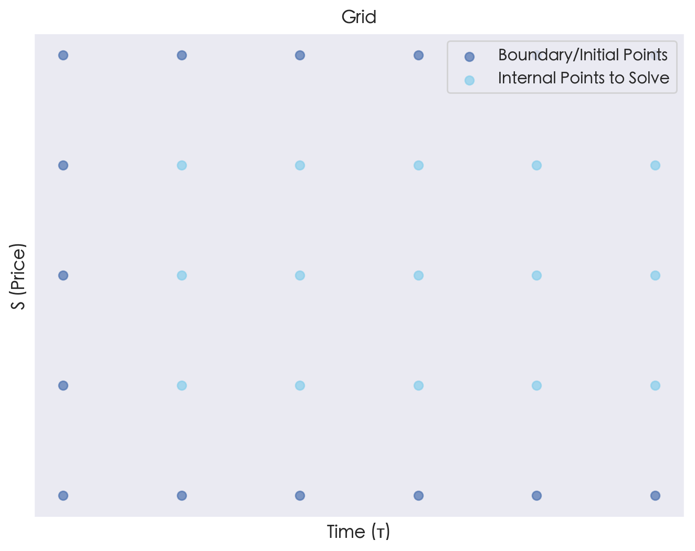
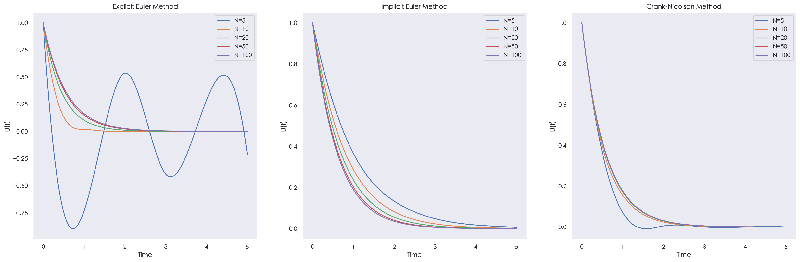
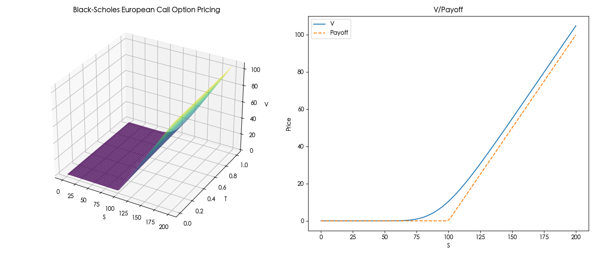
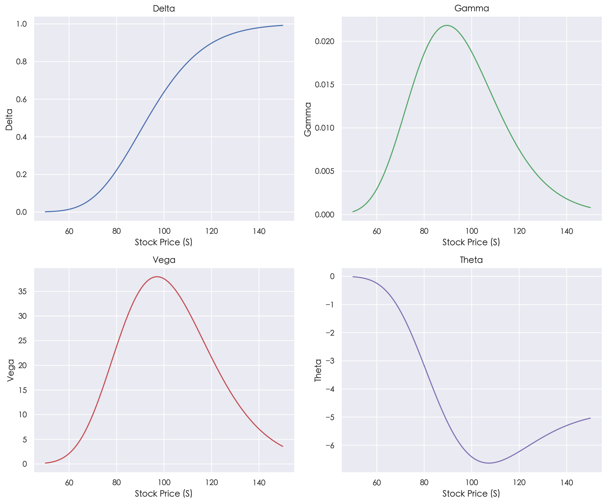
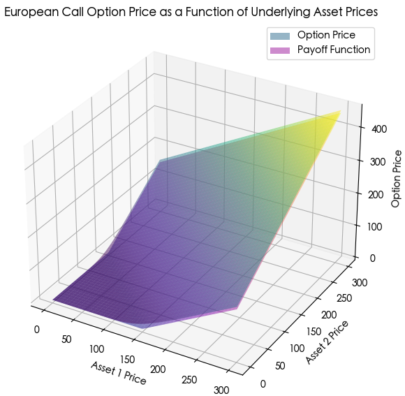
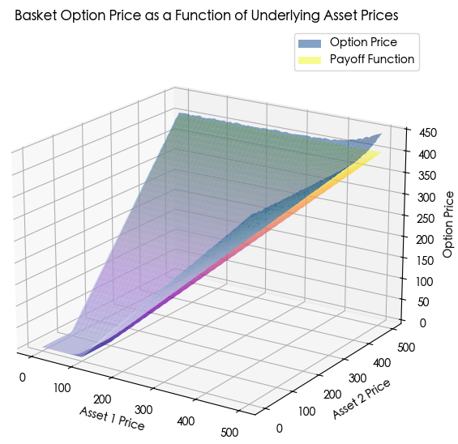

Black–Scholes Model
Pricing financial derivatives is a central problem in quantitative finance. Having established the necessary mathematical foundations, we now introduce the Black–Scholes model, the most foundational continuous-time model for option pricing. An overview of the Black–Scholes framework is shown in Figure 4.1.
Open vector figure (black_scholes_model.pdf)
This chapter covers the following topics:
- Self-Financing Portfolio and the Black–Scholes PDE.
- Numerical Computation, Stability, and Finite-Difference Refinements.
- Risk-Neutral Framework, including Dynkin's Formula, the Feynman–Kac Theorem, and Girsanov's Theorem.
- Black–Scholes Formula, Higher-Order Greeks, P&L Decomposition, and Deep Hedging under Market Frictions.
- Dividend-Paying Stocks and Futures Options (Black's 1976 Model).
- Change of Numeraire.
- Multi-Dimensional Black–Scholes Model.
4.1 Self-Financing Portfolio and Black–Scholes PDE
4.1.1 Model Foundations and Assumptions
The Black–Scholes model prices a derivative by replicating its payoff at maturity using only the underlying asset and a risk-free money market account. The model rests on the following assumptions:
- The underlying asset price \(S_t\) is log-normally distributed and follows the geometric Brownian motion SDE
\[
dS_t = \mu S_t\,dt + \sigma S_t\,dW_t,
\]
where \(\mu \in \R\) and \(\sigma > 0\) are deterministic constants (though they can be generalized to deterministic functions of time with little effort), and \(W_t\) is a standard Brownian motion under the physical measure \(\Prob\).
- Investors have access to a money market account \(B_t\) that accrues continuously at the constant risk-free rate \(r\): \[ dB_t = r B_t\,dt. \]
- The classical model considers European-style derivatives with a fixed maturity date \(T\).
- Transaction costs and taxes are absent.
- There are no restrictions on short selling, and the market is perfectly liquid and frictionless.
4.1.2 Delta-Hedging and Self-Financing Portfolios
Let \(V_t := V(t, S_t)\) denote the value of a European derivative at time \(t\) when the underlying asset price is \(S_t\).
Consider a portfolio \(\Pi_t\) consisting of one unit of the derivative, \(\alpha_t\) shares of the underlying asset \(S_t\), and \(\beta_t\) units of the money market account \(B_t\):
\[ \Pi_t = V_t + \alpha_t S_t + \beta_t B_t, \]where \(\alpha_t\) and \(\beta_t\) are adapted processes to be determined. The principle of replication is to choose \((\alpha_t, \beta_t)\) so that the hedging portfolio \(V_t^h := \alpha_t S_t + \beta_t B_t\) replicates \(-V_t\) at every time \(t \in [t_0, T]\), meaning \(\Pi_t = 0\) for all \(t \in [t_0, T]\) and hence \(d\Pi_t = 0\). In particular, the cash position \(\beta_t B_t\) is determined by \(\alpha_t\) via the replication condition:
\[ \beta_t B_t = -(V_t + \alpha_t S_t). \]Before computing \(d\Pi_t\), we formalize the requirement that rebalancing the hedge neither injects nor withdraws external funds.
A trading strategy \(h_t = (\alpha_t, \beta_t)\), holding \(\alpha_t\) shares of \(S_t\) and \(\beta_t\) units of \(B_t\), is called self-financing if there is no external infusion or withdrawal of capital.
In discrete time, when the portfolio is rebalanced at time \(t + \Delta t\) from \((\alpha_t, \beta_t)\) to \((\alpha_{t+\Delta t}, \beta_{t+\Delta t})\), its value immediately before and after rebalancing must coincide:
\[ \alpha_t S_t + \beta_t B_t \longrightarrow \alpha_t S_{t+\Delta t} + \beta_t B_{t+\Delta t} = \alpha_{t+\Delta t} S_{t+\Delta t} + \beta_{t+\Delta t} B_{t+\Delta t} \longrightarrow \alpha_{t+\Delta t} S_{t+2\Delta t} + \beta_{t+\Delta t} B_{t+2\Delta t}. \]In continuous time, the change in the portfolio value \(V_t^h = \alpha_t S_t + \beta_t B_t\) arises solely from price changes of the held assets:
\[ dV_t^h = d(\alpha_t S_t + \beta_t B_t) = \alpha_t\,dS_t + \beta_t\,dB_t. \]By Itô's product rule, \(d(\alpha_t S_t + \beta_t B_t) = \alpha_t\,dS_t + \beta_t\,dB_t + S_t\,d\alpha_t + d\langle \alpha, S \rangle_t + B_t\,d\beta_t\) (since \(B_t\) has finite variation, \(d\langle \beta, B \rangle_t = 0\)). Thus the continuous-time self-financing condition is equivalent to \(S_t\,d\alpha_t + d\langle \alpha, S \rangle_t + B_t\,d\beta_t = 0\), rather than \(S_t\,d\alpha_t + B_t\,d\beta_t = 0\), which omits the quadratic covariation term \(d\langle \alpha, S \rangle_t\).
Assuming \(V(t, S)\) is sufficiently smooth (\(C^{1,2}\)), Itô's Lemma gives
\[ dV_t = \frac{\partial V}{\partial t}\,dt + \frac{\partial V}{\partial S}\,dS_t + \frac{1}{2}\frac{\partial^2 V}{\partial S^2}\,(dS_t)^2. \]Under the self-financing condition \(dV_t^h = \alpha_t\,dS_t + \beta_t\,dB_t\), the differential of \(\Pi_t = V_t + V_t^h\) is
\[ d\Pi_t = dV_t + \alpha_t\,dS_t + \beta_t\,dB_t = \left(\frac{\partial V}{\partial t} + \frac{1}{2}\sigma^2 S_t^2 \frac{\partial^2 V}{\partial S^2}\right)dt + \left(\frac{\partial V}{\partial S} + \alpha_t\right)dS_t + \beta_t\,dB_t. \]To eliminate the stochastic \(dW_t\) component (which enters through \(dS_t\)), we choose
\[ \alpha_t = -\frac{\partial V}{\partial S}(t, S_t) \quad \forall t \in [t_0, T]. \]This procedure is called Delta-hedging, as it neutralizes first-order exposure to movements in the underlying asset.
The Delta of a derivative is the sensitivity of its price with respect to the underlying asset price:
\[ \Delta_t = \frac{\partial V}{\partial S}(t, S_t). \]With \(\alpha_t = -\frac{\partial V}{\partial S}\) and \(dB_t = r B_t\,dt\), the portfolio differential becomes purely deterministic:
\[ d\Pi_t = \left(\frac{\partial V}{\partial t} + \frac{1}{2}\sigma^2 S_t^2 \frac{\partial^2 V}{\partial S^2} + r \beta_t B_t\right)dt. \]Setting \(d\Pi_t = 0\) and substituting the replication condition 4.1, \(\beta_t B_t = -\bigl(V_t - S_t \frac{\partial V}{\partial S}\bigr)\), yields the celebrated Black–Scholes PDE.
Under the Black–Scholes assumptions, the arbitrage-free price \(V(t, S)\) of a European derivative satisfies the partial differential equation
\[ \frac{\partial V}{\partial t} + \frac{1}{2}\sigma^2 S^2 \frac{\partial^2 V}{\partial S^2} + r S \frac{\partial V}{\partial S} - r V = 0. \]4.1.3 Boundary Conditions
The Black–Scholes PDE 4.2 governs any European derivative; the specific contract enters through its terminal and spatial boundary conditions. Since the PDE is first-order in \(t\) and second-order in \(S\), one temporal condition and two spatial conditions are required.
- Temporal (Terminal) Condition: At maturity \(T\), the derivative value equals its payoff \(\varphi(S_T)\): \[ V(T, S_T) = \varphi(S_T) \overset{\text{European Call}}{=} (S_T - K)^+. \]
- Spatial Conditions (illustrated for a European call option with strike \(K\)):
- Dirichlet conditions specify the value (or asymptotic behavior) of \(V(t, S)\) at the spatial boundaries: \[ \lim_{S \to 0^+} V(t, S) = 0, \qquad V(t, S) \sim S - K e^{-r(T-t)} \quad \text{as } S \to \infty. \]
- Neumann conditions specify the spatial derivative at the boundaries: \[ \lim_{S \to 0^+} \frac{\partial V}{\partial S}(t, S) = 0, \qquad \lim_{S \to \infty} \frac{\partial V}{\partial S}(t, S) = 1. \]
For numerical computation, it is convenient to reverse time by setting \(\tau = T - t\) (time to maturity), transforming 4.2 into a forward-in-\(\tau\) parabolic PDE:
\[ \frac{\partial V}{\partial \tau} = r S \frac{\partial V}{\partial S} + \frac{1}{2}\sigma^2 S^2 \frac{\partial^2 V}{\partial S^2} - r V, \]with initial condition \(V(\tau = 0, S) = \varphi(S)\).
4.2 Numerical Computation and Stability
Finite difference methods solve 4.3 numerically by discretizing the \((\tau, S)\) plane onto a two-dimensional rectangular grid. Truncating the spatial domain to \([S_{\min}, S_{\max}]\) and partitioning it into \(N_S\) equal subintervals yields \(N_S + 1\) spatial nodes indexed by \(j\):
\[ S^j = S_{\min} + j\,\Delta S, \qquad \Delta S = \frac{S_{\max} - S_{\min}}{N_S}, \qquad j = 0, 1, \dots, N_S. \]Similarly, partitioning time to maturity \(\tau \in [0, T]\) into \(N_T\) equal subintervals yields \(N_T + 1\) temporal nodes indexed by \(k\):
\[ \tau^k = k\,\Delta t, \qquad \Delta t = \frac{T}{N_T}, \qquad k = 0, 1, \dots, N_T. \]Here \(\tau^k\) increases from \(\tau^0 = 0\) (maturity) to \(\tau^{N_T} = T\) (valuation time \(t = 0\)). Let \(V_j^k \approx V(\tau^k, S^j)\) denote the numerical approximation at grid point \((k, j)\) (see Figure 4.2).
- The grid contains \((N_T + 1)(N_S + 1)\) nodes in total.
- Of these, \(2N_T + N_S + 1\) boundary nodes are prescribed by the initial condition (\(k = 0\)) and spatial boundary conditions (\(j = 0\) and \(j = N_S\)).
- The remaining \(N_T(N_S - 1)\) internal grid points, \(V_j^k\) for \(k = 1, \dots, N_T\) and \(j = 1, \dots, N_S - 1\), are determined by the discretized PDE.

4.2.1 Explicit Scheme (Forward Euler)
In the explicit scheme, the spatial derivatives are evaluated at the known time level \(k\), allowing \(V_j^{k+1}\) to be computed directly from \(V^k\) for each \(k = 0, 1, \dots, N_T - 1\):
\[ \textcolor{green}{\frac{V_j^{k+1} - V_j^k}{\Delta t}} = r S^j \textcolor{blue}{\left(\frac{V_{j+1}^k - V_{j-1}^k}{2\Delta S}\right)} + \frac{(\sigma S^j)^2}{2} \textcolor{red}{\left(\frac{V_{j+1}^k + V_{j-1}^k - 2V_j^k}{\Delta S^2}\right)} - r V_j^k. \]Rearranging for \(V_j^{k+1}\) gives
\[\begin{aligned} V_j^{k+1} &= a_j V_{\textcolor{blue}{j-1}}^k + b_j V_{\textcolor{red}{j}}^k + c_j V_{\textcolor{green}{j+1}}^k, \\ a_j &= \frac{\Delta t}{2\Delta S^2}(\sigma S^j)^2 - r S^j \frac{\Delta t}{2\Delta S}, \\ b_j &= 1 - r\Delta t - \frac{\Delta t}{\Delta S^2}(\sigma S^j)^2, \\ c_j &= \frac{\Delta t}{2\Delta S^2}(\sigma S^j)^2 + r S^j \frac{\Delta t}{2\Delta S}. \end{aligned}\]Structurally, this resembles a trinomial tree, as each value at step \(k + 1\) is a linear combination of three adjacent values at step \(k\). In matrix-vector form for the internal nodes \(\mathbf{V}^k = (V_1^k, \dots, V_{N_S - 1}^k)^\top \in \R^{N_S - 1}\),
\[ \mathbf{V}^{k+1} = \mathbf{M} \mathbf{V}^k + \mathbf{P}^k, \qquad k = 0, 1, \dots, N_T - 1, \]where \(\mathbf{M} \in \R^{(N_S - 1) \times (N_S - 1)}\) is a tridiagonal matrix holding the coefficients \(a_j, b_j, c_j\), and \(\mathbf{P}^k \in \R^{N_S - 1}\) incorporates the spatial boundary conditions at \(j = 0\) and \(j = N_S\).
4.2.2 Implicit Scheme (Backward Euler)
In the implicit scheme, the spatial derivatives are evaluated at the new time level \(k + 1\):
\[ \textcolor{green}{\frac{V_j^{k+1} - V_j^k}{\Delta t}} = r S^j \textcolor{blue}{\left(\frac{V_{j+1}^{k+1} - V_{j-1}^{k+1}}{2\Delta S}\right)} + \frac{(\sigma S^j)^2}{2} \textcolor{red}{\left(\frac{V_{j+1}^{k+1} + V_{j-1}^{k+1} - 2V_j^{k+1}}{\Delta S^2}\right)} - r V_j^{k+1}. \]Collecting terms at level \(k + 1\) yields the tridiagonal linear system
\[ a'_j V_{j-1}^{k+1} + b'_j V_j^{k+1} + c'_j V_{j+1}^{k+1} = V_j^k, \]where
\[\begin{aligned} a'_j &= r S^j \frac{\Delta t}{2\Delta S} - \frac{\Delta t}{2\Delta S^2}(\sigma S^j)^2, \\ b'_j &= 1 + r\Delta t + \frac{\Delta t}{\Delta S^2}(\sigma S^j)^2, \\ c'_j &= -r S^j \frac{\Delta t}{2\Delta S} - \frac{\Delta t}{2\Delta S^2}(\sigma S^j)^2. \end{aligned}\]In vector form,
\[ \mathbf{M}' \mathbf{V}^{k+1} + \mathbf{P}'^{k+1} = \mathbf{V}^k, \qquad k = 0, 1, \dots, N_T - 1, \]where \(\mathbf{V}^k, \mathbf{P}'^{k+1} \in \R^{N_S - 1}\) and \(\mathbf{M}' \in \R^{(N_S - 1) \times (N_S - 1)}\) is tridiagonal (and can be solved in \(O(N_S)\) operations via the Thomas algorithm).
4.2.3 Crank–Nicolson Scheme
The Crank–Nicolson scheme averages the explicit and implicit spatial discretizations, achieving second-order accuracy in both time and space while remaining unconditionally stable:
\[\begin{aligned} \frac{V_j^{k+1} - V_j^k}{\Delta t} &= \frac{1}{2}\left[ r S^j \left(\frac{V_{j+1}^{k+1} - V_{j-1}^{k+1}}{2\Delta S}\right) + \frac{(\sigma S^j)^2}{2}\left(\frac{V_{j+1}^{k+1} + V_{j-1}^{k+1} - 2V_j^{k+1}}{\Delta S^2}\right) - r V_j^{k+1} \right] \\ &\quad + \frac{1}{2}\left[ r S^j \left(\frac{V_{j+1}^k - V_{j-1}^k}{2\Delta S}\right) + \frac{(\sigma S^j)^2}{2}\left(\frac{V_{j+1}^k + V_{j-1}^k - 2V_j^k}{\Delta S^2}\right) - r V_j^k \right]. \end{aligned}\]Consequently, the Crank–Nicolson scheme offers the fastest convergence among the three schemes with essentially the same per-step computational cost as the implicit scheme.
4.2.4 Discretization Error and Stability
The discretization error is the difference between the exact solution of the PDE and the numerical solution on the grid, expressed as a function of the step sizes \(\Delta S\) and \(\Delta t\).
Table 4.1 summarizes the accuracy and stability properties of the three finite difference schemes.
| Scheme | Order of Discretization Error | Stability |
|---|---|---|
| Explicit | \(O(\Delta t, \Delta S^2)\) | Conditionally Stable |
| Implicit | \(O(\Delta t, \Delta S^2)\) | Unconditionally Stable |
| Crank–Nicolson | \(O(\Delta t^2, \Delta S^2)\) | Unconditionally Stable |
To illustrate numerical stability, consider the linear test ODE
\[ \frac{dU_t}{dt} = \beta U_t, \qquad \beta < 0 \quad (\text{or more generally } \operatorname{Re}(\beta) \le 0), \]whose exact solution \(U_t = U_0 e^{\beta t}\) decays (or remains bounded) as \(t\) increases. Under the explicit Euler scheme, the exact solution satisfies
\[ \frac{U_{k+1} - U_k}{\Delta t} = \beta U_k + \operatorname{DE}_{k+1}, \qquad \operatorname{DE}_{k+1} = O(\Delta t), \]where \(\operatorname{DE}_{k+1}\) is the local truncation (discretization) error. Writing the numerical solution as \(\widetilde{U}_k = U_k - \varepsilon_k\), the error \(\varepsilon_k\) propagates according to
\[ \varepsilon_{k+1} = (1 + \beta \Delta t)\varepsilon_k + \operatorname{DE}_{k+1}\Delta t. \]The quantity \(\lambda := 1 + \beta \Delta t\) is the growth (amplification) factor, and stability requires \(|\lambda| \le 1\), i.e., \(\Delta t \le -2/\beta\) for \(\beta < 0\). For the Black–Scholes PDE, this translates to the parabolic stability condition \(\Delta t \le C\,\Delta S^2\), where \(C > 0\) depends on the model parameters.
For the implicit Euler scheme, the growth factor is
\[ \lambda = \frac{1}{1 - \beta \Delta t}. \]Since \(\beta < 0\) (or \(\operatorname{Re}(\beta) \le 0\)) and \(\Delta t > 0\), we have \(|1 - \beta\Delta t| \ge 1\) and hence \(|\lambda| \le 1\) for all \(\Delta t > 0\). Thus the implicit scheme is unconditionally stable, avoiding the restrictive time-step constraint of the explicit scheme.
Under the Crank–Nicolson scheme,
\[\begin{aligned} \frac{U_{k+1} - U_k}{\Delta t} &= \frac{\beta}{2}(U_k + U_{k+1}) + \operatorname{DE}_{k+1}, \\ U_{k+1}\left(1 - \frac{\beta}{2}\Delta t\right) &= U_k\left(1 + \frac{\beta}{2}\Delta t\right) + \operatorname{DE}_{k+1}\Delta t, \\ U_{k+1} &= \left(\frac{1 + \frac{\beta}{2}\Delta t}{1 - \frac{\beta}{2}\Delta t}\right) U_k + \frac{\operatorname{DE}_{k+1}\Delta t}{1 - \frac{\beta}{2}\Delta t}. \end{aligned}\]The growth factor is \(\lambda = \frac{1 + \frac{\beta}{2}\Delta t}{1 - \frac{\beta}{2}\Delta t}\), which satisfies \(|\lambda| \le 1\) for all \(\Delta t > 0\) whenever \(\operatorname{Re}(\beta) \le 0\). Hence the Crank–Nicolson scheme is also unconditionally stable.
A companion Python script illustrating the numerical stability of these three schemes (producing Figure 4.3) is provided in code/ch04_black_scholes_model.py.

4.2.5 Log-Space Transformation and Rannacher Time-Stepping
In production PDE solvers, directly discretizing 4.3 in spot space \(S\) has two drawbacks: the diffusion coefficient \(\frac{1}{2}\sigma^2 S^2\) and convection coefficient \(r S\) vary strongly across the grid, and a uniform mesh in \(S\) wastes nodes at large asset values while under-resolving small asset values. Both issues are resolved by transforming to log-spot coordinates \(x := \ln S\) and defining \(U(\tau, x) := V(\tau, e^x)\). By the chain rule,
\[ \frac{\partial V}{\partial S} = e^{-x}\frac{\partial U}{\partial x}, \qquad \frac{\partial^2 V}{\partial S^2} = e^{-2x}\left(\frac{\partial^2 U}{\partial x^2} - \frac{\partial U}{\partial x}\right). \]Substituting these derivatives into 4.3 cancels all factors of \(S = e^x\) and reduces the Black–Scholes PDE to a constant-coefficient convection–diffusion equation:
\[ \frac{\partial U}{\partial \tau} = \frac{1}{2}\sigma^2 \frac{\partial^2 U}{\partial x^2} + \left(r - \frac{1}{2}\sigma^2\right)\frac{\partial U}{\partial x} - r U, \]with initial condition \(U(0, x) = \varphi(e^x)\). On a uniform grid in \(x\), the resulting tridiagonal discretization matrices have constant diagonals independent of spatial index \(j\), simplifying matrix factorization and naturally concentrating grid resolution in the economically relevant region around the strike.
A subtler numerical pathology arises in the Crank–Nicolson scheme when the terminal payoff \(\varphi(S)\) lacks smoothness—as occurs for vanilla calls and puts at the strike kink \(S = K\) (where \(\partial^2 \varphi / \partial S^2 = \delta_K\) is a Dirac delta), and even more severely for digital or barrier options with discontinuous payoffs. Recall from the linear test ODE analysis above that the Crank–Nicolson amplification factor is
\[ \lambda_{\mathrm{CN}}(\beta\Delta t) = \frac{1 + \frac{1}{2}\beta\Delta t}{1 - \frac{1}{2}\beta\Delta t}. \]Although \(|\lambda_{\mathrm{CN}}| \le 1\) for all \(\beta \le 0\) (A-stability), in the high-frequency limit \(\beta\Delta t \to -\infty\) corresponding to sharp spatial modes excited by the payoff kink,
\[ \lim_{\beta\Delta t \to -\infty} \lambda_{\mathrm{CN}}(\beta\Delta t) = -1. \]Consequently, Crank–Nicolson is not L-stable: high-frequency error modes are never damped and instead alternate in sign at every time step. While these spurious oscillations may remain small in the option value \(V\), they are amplified by spatial differentiation and severely corrupt numerical estimates of \(\Delta\) and especially \(\Gamma\) near \(S = K\).
By contrast, the fully implicit backward Euler scheme has amplification factor \(\lambda_{\mathrm{BE}}(\beta\Delta t) = (1 - \beta\Delta t)^{-1}\), which satisfies \(\lim_{\beta\Delta t \to -\infty} \lambda_{\mathrm{BE}} = 0\) (L-stability) and therefore strongly damps high-frequency modes. Rannacher time-stepping (Rannacher, 1984) combines the strong damping of backward Euler with the second-order accuracy of Crank–Nicolson:
- Replace the first Crank–Nicolson time step of size \(\Delta t\) (at \(\tau = 0\), immediately adjacent to the non-smooth payoff) with two half-steps of fully implicit backward Euler, each of size \(\Delta t / 2\) (or, for discontinuous digital payoffs, four quarter-steps).
- Advance all remaining time steps \(k = 1, \dots, N_T - 1\) using the standard Crank–Nicolson scheme with step size \(\Delta t\).
After the two initial half-steps, any high-frequency mode with \(|\beta|\Delta t \gg 1\) is attenuated by a factor of
\[ \left|\lambda_{\mathrm{BE}}\!\left(\frac{\beta\Delta t}{2}\right)\right|^2 = \frac{1}{\left(1 - \frac{1}{2}\beta\Delta t\right)^2} = O\!\left((\beta\Delta t)^{-2}\right), \]eliminating oscillations at the strike kink. Because backward Euler is applied only over a fixed \(O(\Delta t)\) initial interval (a constant number of steps independent of \(N_T\)), its \(O(\Delta t^2)\) local truncation error per step does not accumulate to \(O(\Delta t)\), and the global scheme retains full second-order \(O(\Delta t^2, \Delta x^2)\) convergence for both prices and Greeks.
4.3 Risk-Neutral Framework
Theoretically and mathematically, the Black–Scholes model rests on the risk-neutral valuation framework. Observe that the Black–Scholes PDE 4.2 does not contain the physical expected return \(\mu\) of the underlying asset; consequently, its solution is completely independent of \(\mu\).
4.3.1 Dynkin's Formula
Let \(X_t\) be an Itô diffusion satisfying \(dX_t = \mu(t, X_t)\,dt + \sigma(t, X_t)\,dW_t\), and let \(f(t, x)\) be a \(C^{1,2}\) function. By Itô's Lemma,
\[ df(t, X_t) = \left(\frac{\partial f}{\partial t} + \mu(t, X_t)\frac{\partial f}{\partial x} + \frac{1}{2}\sigma^2(t, X_t)\frac{\partial^2 f}{\partial x^2}\right)dt + \sigma(t, X_t)\frac{\partial f}{\partial x}\,dW_t. \]Integrating from \(t_0\) to \(T\) yields
\[ f(T, X_T) = f(t_0, X_{t_0}) + \textcolor{red}{\int_{t_0}^T \sigma(t, X_t)\frac{\partial f}{\partial x}\,dW_t} + \int_{t_0}^T \left(\frac{\partial f}{\partial t} + \mu(t, X_t)\frac{\partial f}{\partial x} + \frac{1}{2}\sigma^2(t, X_t)\frac{\partial^2 f}{\partial x^2}\right)dt. \]Under standard integrability conditions ensuring the Itô integral is a true martingale (and therefore has zero conditional expectation), taking conditional expectations given \(X_{t_0} = x_0\) gives
\[ \E[f(T, X_T) \mid X_{t_0} = x_0] = f(t_0, x_0) + \E\left[\left.\int_{t_0}^T \left(\textcolor{red}{\frac{\partial f}{\partial t} + \mu(t, X_t)\frac{\partial f}{\partial x} + \frac{1}{2}\sigma^2(t, X_t)\frac{\partial^2 f}{\partial x^2}}\right)dt \,\right|\, X_{t_0} = x_0\right]. \]This leads directly to Dynkin's Formula.
Let \(X_t\) follow \(dX_t = \mu(t, X_t)\,dt + \sigma(t, X_t)\,dW_t\). If \(f(t, x) \in C^{1,2}\) satisfies the PDE
\[ \frac{\partial f}{\partial t} + \mu(t, x)\frac{\partial f}{\partial x} + \frac{1}{2}\sigma^2(t, x)\frac{\partial^2 f}{\partial x^2} = 0 \]together with standard integrability conditions, then
\[ f(t_0, x_0) = \E[f(T, X_T) \mid X_{t_0} = x_0]. \]4.3.2 Feynman–Kac Theorem
Setting \(t_0 = 0\) and \(f(t, S) = e^{-rt}V(t, S)\), we compute
\[ \frac{\partial f}{\partial t} = -r e^{-rt}V + e^{-rt}\frac{\partial V}{\partial t}, \qquad \frac{\partial f}{\partial S} = e^{-rt}\frac{\partial V}{\partial S}, \qquad \frac{\partial^2 f}{\partial S^2} = e^{-rt}\frac{\partial^2 V}{\partial S^2}. \]Applying Dynkin's derivation to \(f(t, S_t)\) when \(dS_t = r S_t\,dt + \sigma S_t\,dW_t\), we obtain
\[ \E[e^{-rT} V(T, S_T) \mid S_0] = V(0, S_0) + \E\left[\left.\int_0^T e^{-rt}\left(\textcolor{red}{\frac{\partial V}{\partial t} + r S_t \frac{\partial V}{\partial S} + \frac{1}{2}\sigma^2 S_t^2 \frac{\partial^2 V}{\partial S^2} - r V}\right)dt \,\right|\, S_0\right]. \]The highlighted expression is precisely the Black–Scholes PDE 4.2, which vanishes identically.
Suppose \(V(t, S)\) satisfies the Black–Scholes PDE 4.2 with terminal condition \(V(T, S) = \varphi(S)\), and let \(S_t\) follow the dynamics
\[ dS_t = r S_t\,dt + \sigma S_t\,dW_t. \]Then, under standard growth and integrability conditions,
\[ V(0, S_0) = \E\bigl[e^{-rT} V(T, S_T) \mid S_0\bigr], \]or more generally, for any \(t \in [0, T]\),
\[ V(t, S_t) = \E_{t, S_t}\bigl[e^{-r(T-t)} V(T, S_T)\bigr], \]where \(\E_{t, S_t}[\,\cdot\,]\) denotes conditional expectation given \(S_t\) at time \(t\).
Note that the Feynman–Kac representation requires the underlying asset to have drift \(r\), whereas under the real-world measure \(\Prob\) the asset has drift \(\mu\). Just as in the binomial model, derivative prices are determined by the risk-neutral dynamics rather than the physical dynamics. Specifically, under the risk-neutral measure \(\Q\), the stock price follows
\[ dS_t = S_t\bigl(r\,dt + \sigma\,dW_t^{\Q}\bigr), \]where \(W_t^{\Q}\) is a standard Brownian motion under \(\Q\). We can then apply Theorem 4.3 directly under \(\Q\).
4.3.3 Measure Change and Girsanov's Theorem
To construct such a risk-neutral measure \(\Q\), we first introduce the notion of an equivalent change of probability measure.
Let \(L_T\) be an \(\F_T\)-measurable random variable satisfying \(L_T > 0\) \(\Prob\)-almost surely and \(\E^{\Prob}[L_T] = 1\). The probability measure \(\Q\) equivalent to \(\Prob\) defined by
\[ \frac{d\Q}{d\Prob} = L_T, \qquad \left.\frac{d\Q}{d\Prob}\right|_{\F_t} = L_t := \E^{\Prob}[L_T \mid \F_t], \]is called a measure change from \(\Prob\) to \(\Q\), and \(L_T\) is called the Radon–Nikodym derivative.
Let \(\Q\) be defined as in Definition 4.4 with \(L_T > 0\) \(\Prob\)-a.s.
- For any \(\F_T\)-measurable random variable \(X\) with \(L_T X \in L^1(\Prob)\) (equivalently \(X \in L^1(\Q)\)), \[ \E^{\Q}[X] = \E^{\Prob}[L_T X]. \]
- For any \(X \in L^1(\Prob)\), \[ \E^{\Prob}[X] = \E^{\Q}\!\left[\frac{X}{L_T}\right]. \]
- (Abstract Bayes' Rule) If \(0 \le s < t \le T\) and \(X\) is \(\F_t\)-measurable with \(X \in L^1(\Q)\), then \[ \E^{\Q}[X \mid \F_s] = \frac{1}{L_s}\E^{\Prob}[L_t X \mid \F_s]. \]
The first identity follows directly from the definition of the Radon–Nikodym derivative:
\[ \E^{\Q}[X] = \int_{\Omega} X \dd\Q = \int_{\Omega} X L_T \dd\Prob = \E^{\Prob}[L_T X]. \]The second identity follows by reversing the roles of \(\Prob\) and \(\Q\), since \(d\Prob/d\Q = L_T^{-1}\) \(\Q\)-a.s.
For the third identity, define \(Y := L_s^{-1}\E^{\Prob}[L_t X \mid \F_s]\). Clearly \(Y\) is \(\F_s\)-measurable. By the defining property of conditional expectation, it suffices to show that \(\int_A Y \dd\Q = \int_A X \dd\Q\) for every \(A \in \F_s\). Using the tower property and \(L_s = \E^{\Prob}[L_T \mid \F_s]\), \(L_t = \E^{\Prob}[L_T \mid \F_t]\), we have for any \(A \in \F_s\):
\[\begin{aligned} \int_A Y \dd\Q &= \E^{\Q}[\ind_A Y] = \E^{\Prob}[L_T \ind_A Y] = \E^{\Prob}[L_s \ind_A Y] \\ &= \E^{\Prob}\!\bigl[\ind_A \E^{\Prob}[L_t X \mid \F_s]\bigr] = \E^{\Prob}[\ind_A L_t X] = \E^{\Prob}[\ind_A L_T X] = \E^{\Q}[\ind_A X] = \int_A X \dd\Q. \qedhere \end{aligned}\] ◻
Let \(Z \sim \mathcal{N}(0, 1)\) under \(\Prob\), with density \(\phi(z) = \frac{1}{\sqrt{2\pi}} e^{-z^2/2}\). For \(\lambda \in \R\), define
\[ L := \exp\!\left(\lambda Z - \frac{1}{2}\lambda^2\right). \]Then \(L > 0\) and \(\E^{\Prob}[L] = 1\), because
\[ \E^{\Prob}[L] = \frac{1}{\sqrt{2\pi}} \int_{-\infty}^{\infty} e^{\lambda z - \frac{1}{2}\lambda^2} e^{-\frac{1}{2}z^2}\dd z = \frac{1}{\sqrt{2\pi}} \int_{-\infty}^{\infty} e^{-\frac{1}{2}(z - \lambda)^2}\dd z = 1. \]For any measurable function \(f\) with \(f(Z)L \in L^1(\Prob)\), completing the square yields
\[\begin{aligned} \E^{\Prob}[f(Z) L] &= \frac{1}{\sqrt{2\pi}} \int_{-\infty}^{\infty} f(z) e^{-\frac{1}{2}(z - \lambda)^2}\dd z = \E^{\Prob}[f(Z + \lambda)]. \end{aligned}\]Defining a new probability measure \(\Q\) by \(d\Q/d\Prob = L\), we obtain
\[ \E^{\Q}[f(Z)] = \E^{\Prob}[f(Z) L] = \E^{\Prob}[f(Z + \lambda)]. \]In particular, \(Z \sim \mathcal{N}(\lambda, 1)\) under \(\Q\), and equivalently \(Z - \lambda \sim \mathcal{N}(0, 1)\) under \(\Q\):
\[ \Q(Z - \lambda \le c) = \E^{\Q}\bigl[\ind_{\{Z \le c + \lambda\}}\bigr] = \E^{\Prob}\bigl[\ind_{\{Z + \lambda \le c + \lambda\}}\bigr] = \Prob(Z \le c) = \Phi(c), \]where \(\Phi\) is the cumulative distribution function of the standard normal distribution.
Analogously, a standard Brownian motion \(W_t^{\Prob}\) under the physical measure \(\Prob\) acquires a drift under an equivalent measure \(\Q\). Girsanov's Theorem characterizes this shift.
Let \(W_t^{\Prob}\) be a standard Brownian motion under \(\Prob\), and let \(L_t\) be a positive \(\F_t\)-martingale with \(\E^{\Prob}[L_T] = 1\) satisfying
\[ dL_t = k_t L_t\,dW_t^{\Prob}, \qquad L_0 = 1. \]Define an equivalent probability measure \(\Q\) by the Radon–Nikodym derivative \(d\Q/d\Prob = L_T\). Then the process \(W_t^{\Q}\) defined by
\[ dW_t^{\Q} = dW_t^{\Prob} - k_t\,dt, \qquad W_0^{\Q} = 0, \]is a standard Brownian motion under \(\Q\).
The stochastic exponential \(L_t\) has the explicit representation
\[ L_t = \exp\!\left\{\int_0^t k_s\,dW_s^{\Prob} - \frac{1}{2}\int_0^t |k_s|^2\,ds\right\}. \]A sufficient condition guaranteeing that \(L_t\) is a true martingale (and hence \(\E^{\Prob}[L_T] = 1\)) is Novikov's condition:
\[ \E^{\Prob}\!\left[\exp\!\left\{\frac{1}{2}\int_0^T |k_t|^2\,dt\right\}\right] < \infty. \]4.3.4 Change of Measure in the Black–Scholes Model
By Theorem 4.4, substituting \(dW_t^{\Prob} = dW_t^{\Q} + k_t\,dt\) into the physical stock dynamics gives
\[ dS_t = \mu S_t\,dt + \sigma S_t\bigl(dW_t^{\Q} + k_t\,dt\bigr) = (\mu + \sigma k_t) S_t\,dt + \sigma S_t\,dW_t^{\Q}. \]Matching this to the risk-neutral dynamics \(dS_t = r S_t\,dt + \sigma S_t\,dW_t^{\Q}\) uniquely determines
\[ k_t = -\frac{\mu - r}{\sigma} =: -\lambda, \]where \(\lambda := \frac{\mu - r}{\sigma}\) is called the market price of risk (or Sharpe ratio). Since \(k_t = -\lambda\) is constant, Novikov's condition holds trivially, and the Radon–Nikodym derivative is
\[\begin{aligned} L_T &= \exp\!\left\{\int_0^T k_t\,dW_t^{\Prob} - \frac{1}{2}\int_0^T k_t^2\,dt\right\} = \exp\!\left\{-\lambda W_T^{\Prob} - \frac{1}{2}\lambda^2 T\right\} \\ &= \exp\!\left\{-\lambda W_T^{\Q} + \frac{1}{2}\lambda^2 T\right\} = \exp\!\left\{-\frac{\mu - r}{\sigma} W_T^{\Q} + \frac{1}{2}\left(\frac{\mu - r}{\sigma}\right)^2 T\right\}, \end{aligned}\]where the second line uses \(W_T^{\Prob} = W_T^{\Q} - \lambda T\).
We now establish completeness of the Black–Scholes market and derive the risk-neutral valuation formula.
A market is said to be complete if every contingent claim can be replicated by a self-financing portfolio (which, in an arbitrage-free market, corresponds to the existence of a unique equivalent risk-neutral measure \(\Q\)).
In the Black–Scholes model, the discounted stock price \(S_t/B_t\) is a martingale under the risk-neutral measure \(\Q\).
Applying the multi-dimensional Itô's Lemma (Theorem 4.12 in Section 4.7) to \(f(S_t, B_t) = S_t / B_t\), we have
\[ \frac{\partial f}{\partial S} = \frac{1}{B_t}, \qquad \frac{\partial f}{\partial B} = -\frac{S_t}{B_t^2}, \qquad \frac{\partial^2 f}{\partial S^2} = 0, \]and \(dS_t\,dB_t = 0\), \((dB_t)^2 = 0\). Therefore,
\[ d\left(\frac{S_t}{B_t}\right) = \frac{1}{B_t}\,dS_t - \frac{S_t}{B_t^2}\,dB_t = \frac{\sigma S_t}{B_t}\,dW_t^{\Q}. \]Since \(S_t/B_t\) has zero drift under \(\Q\) (and is a geometric Brownian motion with bounded volatility \(\sigma\)), it is a true \(\Q\)-martingale. ◻
To avoid invoking the multi-dimensional Itô's Lemma, one can directly write
\[ \frac{S_t}{B_t} = \frac{S_0}{B_0}\exp\!\left(-\frac{1}{2}\sigma^2 t + \sigma W_t^{\Q}\right) \]and apply the one-dimensional Itô's Lemma to \(f(t, W_t^{\Q})\).
An adapted process \(X_t\) is a martingale under \(\Q\) if and only if \(X_t L_t\) is a martingale under \(\Prob\).
By part 3 of Proposition 4.1, for any \(0 \le s < t \le T\), if \(X_t\) is a \(\Q\)-martingale, then
\[ \E^{\Prob}[X_t L_t \mid \F_s] = L_s \E^{\Prob}\!\left[X_t \frac{L_t}{L_s} \,\Big|\, \F_s\right] = L_s \E^{\Q}[X_t \mid \F_s] = L_s X_s. \]Conversely, if \(X_t L_t\) is a \(\Prob\)-martingale, then
\[ \E^{\Q}[X_t \mid \F_s] = \frac{1}{L_s}\E^{\Prob}[L_t X_t \mid \F_s] = \frac{L_s X_s}{L_s} = X_s. \qedhere \] ◻
As a direct check of Corollary 4.1, observe that
\[\begin{aligned} \frac{S_t}{B_t} L_t &= \frac{S_t}{B_t}\exp\!\left\{-\frac{\mu - r}{\sigma} W_t^{\Prob} - \frac{1}{2}\left(\frac{\mu - r}{\sigma}\right)^2 t\right\} = \frac{S_0}{B_0}\exp\bigl(C_1 t + C_2 W_t^{\Prob}\bigr), \end{aligned}\]where
\[ C_1 = \mu - r - \frac{1}{2}\sigma^2 - \frac{1}{2}\left(\frac{\mu - r}{\sigma}\right)^2, \qquad C_2 = \sigma - \frac{\mu - r}{\sigma}. \]One readily verifies that \(C_1 + \frac{1}{2}C_2^2 = 0\), so the drift term in Itô's Lemma vanishes and \((S_t/B_t) L_t\) is indeed a \(\Prob\)-martingale.
Let \(W_t\) be a standard Brownian motion and \(\F = (\F_t)_{t \ge 0}\) its natural filtration (augmented to satisfy the usual conditions). If \(M = (M_t)_{t \ge 0}\) is a square-integrable \(\F\)-martingale, then there exists a unique (up to null sets) \(\F\)-adapted process \(g\) with \(\E\bigl[\int_0^T g_s^2\,ds\bigr] < \infty\) such that
\[ M_t = M_0 + \int_0^t g_s\,dW_s. \]The Black–Scholes model is complete.
Let \(V_T\) be a square-integrable \(\F_T\)-measurable contingent claim payoff, and define the \(\Q\)-martingale
\[ M_t := \E^{\Q}\!\left[\left.\frac{V_T}{B_T}\,\right|\,\F_t\right], \]so that \(M_T = V_T / B_T\). We construct a self-financing portfolio \(\Pi_t = \alpha_t S_t + \beta_t B_t\) satisfying \(\Pi_t = M_t B_t\) for all \(t \in [0, T]\) (and hence \(\Pi_T = V_T\)).
By the Martingale Representation Theorem (Lemma 4.2), there exists an adapted process \(g_t\) such that
\[ dM_t = g_t\,dW_t^{\Q}. \]By Lemma 4.1, \(d(S_t / B_t) = \sigma (S_t / B_t)\,dW_t^{\Q}\), so
\[ dM_t = g_t\,dW_t^{\Q} = \frac{g_t B_t}{\sigma S_t}\,d\!\left(\frac{S_t}{B_t}\right). \]Define the trading strategy \((\alpha_t, \beta_t)\) by
\[ \alpha_t := \frac{g_t B_t}{\sigma S_t}, \qquad \beta_t := M_t - \alpha_t \frac{S_t}{B_t}. \]Then the portfolio value is \(\Pi_t = \alpha_t S_t + \beta_t B_t = M_t B_t\). Applying Itô's product rule (noting that \(d\langle M, B \rangle_t = 0\)) yields
\[\begin{aligned} d\Pi_t &= B_t\,dM_t + M_t\,dB_t \\ &= B_t \alpha_t\,d\!\left(\frac{S_t}{B_t}\right) + \left(\beta_t + \alpha_t \frac{S_t}{B_t}\right)dB_t \\ &= B_t \alpha_t\left(\frac{dS_t}{B_t} - \frac{S_t}{B_t^2}\,dB_t\right) + \left(\beta_t + \alpha_t \frac{S_t}{B_t}\right)dB_t \\ &= \alpha_t\,dS_t + \beta_t\,dB_t. \end{aligned}\]Thus \((\alpha_t, \beta_t)\) is self-financing and replicates \(V_T\) at maturity \(T\). Therefore, the Black–Scholes model is complete. ◻
By no-arbitrage, \(V_t = \Pi_t = M_t B_t\), which immediately yields the risk-neutral valuation formula.
In the Black–Scholes model, the arbitrage-free price \(V_t\) of a European derivative with payoff \(V_T\) at maturity \(T\) is given by
\[ V_t = B_t\,\E^{\Q}\!\left[\left.\frac{V_T}{B_T}\,\right|\,\F_t\right] = e^{-r(T-t)}\E^{\Q}[V_T \mid \F_t], \]where \(\Q\) is the unique risk-neutral measure.
The risk-neutral valuation formula coincides with the Feynman–Kac representation (Theorem 4.3).
4.4 Black–Scholes Formula and the Greeks
Using the Feynman–Kac Theorem, Girsanov's Theorem, and the Risk-Neutral Valuation Formula (Theorem 4.6), we obtain the closed-form Black–Scholes option pricing formula by computing the risk-neutral expectation of the terminal payoff.
In the Black–Scholes model, the price of a European call option with strike \(K\) and maturity \(T\) is
\[ C(t, S_t) = S_t \Phi(d_1) - K e^{-r(T-t)} \Phi(d_2), \]where
\[\begin{aligned} d_1 &= \frac{\log(S_t / K) + \left(r + \frac{1}{2}\sigma^2\right)(T - t)}{\sigma\sqrt{T - t}}, \\ d_2 &= d_1 - \sigma\sqrt{T - t}, \end{aligned}\]and \(\Phi\) is the cumulative distribution function of the standard normal distribution.
We evaluate \(C(0, S_0)\); the general case \(t \in [0, T)\) follows identically by replacing \(T\) with \(T - t\) and \(S_0\) with \(S_t\). Under \(\Q\),
\[ S_T = S_0 \exp\!\left(\left(r - \frac{1}{2}\sigma^2\right)T + \sigma\sqrt{T}\,Z\right), \qquad Z \sim \mathcal{N}(0, 1). \]Hence
\[\begin{aligned} C(0, S_0) &= e^{-rT}\E^{\Q}\bigl[(S_T - K)^+ \mid S_0\bigr] \\ &= e^{-rT}\int_{-\infty}^{\infty} \left(S_0 e^{(r - \frac{1}{2}\sigma^2)T + \sigma\sqrt{T}\,z} - K\right)^+ \phi(z)\dd z \\ &= e^{-rT}\int_{K^*}^{\infty} \left(S_0 e^{(r - \frac{1}{2}\sigma^2)T + \sigma\sqrt{T}\,z} - K\right) \phi(z)\dd z \\ &= S_0 \int_{K^*}^{\infty} e^{-\frac{1}{2}\sigma^2 T + \sigma\sqrt{T}\,z}\,\phi(z)\dd z - K e^{-rT}\int_{K^*}^{\infty} \phi(z)\dd z, \end{aligned}\]where the lower integration limit \(K^*\) corresponds to the event \(S_T > K\):
\[ S_T > K \iff Z > \frac{\log(K / S_0) - \left(r - \frac{1}{2}\sigma^2\right)T}{\sigma\sqrt{T}} =: K^*. \]For the first integral, completing the square in the exponent gives
\[\begin{aligned} S_0 \int_{K^*}^{\infty} e^{-\frac{1}{2}\sigma^2 T + \sigma\sqrt{T}\,z}\,\phi(z)\dd z &= \frac{S_0}{\sqrt{2\pi}} \int_{K^*}^{\infty} e^{-\frac{1}{2}(z - \sigma\sqrt{T})^2}\dd z \\ &= S_0 \Prob(Z > K^* - \sigma\sqrt{T}) = S_0 \Phi(\sigma\sqrt{T} - K^*). \end{aligned}\]For the second integral,
\[ K e^{-rT}\int_{K^*}^{\infty} \phi(z)\dd z = K e^{-rT}\Prob(Z > K^*) = K e^{-rT}\Phi(-K^*). \]Identifying \(d_2 = -K^*\) and \(d_1 = \sigma\sqrt{T} - K^* = d_2 + \sigma\sqrt{T}\) yields
\[ C(0, S_0) = S_0 \Phi(d_1) - K e^{-rT}\Phi(d_2). \qedhere \] ◻
A Python implementation of the Black–Scholes call pricing function (producing Figure 4.4) is available in code/ch04_black_scholes_model.py.

For a European put option, put–call parity
\[ C(t, S_t) - P(t, S_t) = S_t - K e^{-r(T-t)} \]immediately gives
\[ P(t, S_t) = K e^{-r(T-t)}\Phi(-d_2) - S_t \Phi(-d_1). \]4.4.1 The Greeks
The Greeks measure the sensitivities of an option price \(C\) to changes in the underlying asset price and model parameters:
- Delta: \(\Delta = \dfrac{\partial C}{\partial S}\), sensitivity to the underlying asset price.
- Gamma: \(\Gamma = \dfrac{\partial^2 C}{\partial S^2}\), sensitivity of Delta to the underlying asset price.
- Theta: \(\Theta = \dfrac{\partial C}{\partial t}\), sensitivity to the passage of time.
- Vega: \(\nu = \dfrac{\partial C}{\partial \sigma}\), sensitivity to volatility.
- Rho: \(\rho = \dfrac{\partial C}{\partial r}\), sensitivity to the risk-free interest rate.
For a European call option in the Black–Scholes model (evaluated at \(t = 0\) with \(q = 0\)), the first-order and Gamma sensitivities take the closed forms (illustrated in Figure 4.5):
\[\begin{aligned} \Delta_C &= \Phi(d_1), & \Gamma_C &= \frac{\phi(d_1)}{S_0 \sigma \sqrt{T}}, \\ \Theta_C &= -\frac{S_0 \phi(d_1)\sigma}{2\sqrt{T}} - r K e^{-rT}\Phi(d_2), & \mathcal{V}_C &= S_0 \sqrt{T}\,\phi(d_1), \\ \rho_C &= K T e^{-rT}\Phi(d_2), \end{aligned}\]where \(\phi(x) = \frac{1}{\sqrt{2\pi}} e^{-x^2/2}\) is the standard normal probability density function. Differentiating put–call parity \(P = C - S_0 + K e^{-rT}\) immediately yields the corresponding European put Greeks:
\[\begin{aligned} \Delta_P &= \Delta_C - 1 = \Phi(d_1) - 1 = -\Phi(-d_1), & \Gamma_P &= \Gamma_C = \frac{\phi(d_1)}{S_0 \sigma \sqrt{T}}, \\ \Theta_P &= \Theta_C + r K e^{-rT} = -\frac{S_0 \phi(d_1)\sigma}{2\sqrt{T}} + r K e^{-rT}\Phi(-d_2), & \mathcal{V}_P &= \mathcal{V}_C = S_0 \sqrt{T}\,\phi(d_1), \\ \rho_P &= \rho_C - K T e^{-rT} = -K T e^{-rT}\Phi(-d_2). \end{aligned}\]In particular, European calls and puts with identical strike and maturity share the exact same Gamma and Vega.

Beyond first-order sensitivities and Gamma, trading desks actively monitor second-order and cross Greeks that govern how Delta and Vega evolve as volatility or time changes. Using the identity
\[ \frac{\partial d_1}{\partial \sigma} = -\frac{\ln(S / K) + r\tau}{\sigma^2\sqrt{\tau}} + \frac{1}{2}\sqrt{\tau} = -\frac{d_1 - \sigma\sqrt{\tau}}{\sigma} = -\frac{d_2}{\sigma}, \]where \(\tau := T - t\) is time to maturity, and \(\phi'(x) = -x\phi(x)\), we obtain three central cross and higher-order sensitivities (identical for calls and puts when \(q = 0\), since \(\Delta_P = \Delta_C - 1\) and \(\mathcal{V}_P = \mathcal{V}_C\)):
- Vanna measures the sensitivity of Delta to volatility (equivalently, the sensitivity of Vega to spot): \[ \mathrm{Vanna} := \frac{\partial^2 V}{\partial S\,\partial \sigma} = \frac{\partial \Delta}{\partial \sigma} = \phi(d_1)\frac{\partial d_1}{\partial \sigma} = -\phi(d_1)\frac{d_2}{\sigma}. \]
- Volga (Vomma) measures the convexity of the option price with respect to volatility:
\[
\mathrm{Volga}
:= \frac{\partial^2 V}{\partial \sigma^2}
= \frac{\partial \mathcal{V}}{\partial \sigma}
= S\sqrt{\tau}\,\phi'(d_1)\frac{\partial d_1}{\partial \sigma}
= S\sqrt{\tau}\,\bigl(-d_1\phi(d_1)\bigr)\!\left(-\frac{d_2}{\sigma}\right)
= \mathcal{V}\cdot\frac{d_1 d_2}{\sigma}.
\]
Volga changes sign across strikes: near at-the-money (\(d_1 > 0 > d_2\)), \(d_1 d_2 < 0\) so Volga is slightly negative, whereas in the wings (\(d_1 d_2 > 0\)), Volga is strictly positive—a geometric property that drives the volatility smile in Chapter 5.
- Charm (Delta Decay) measures the rate of change of Delta with respect to time-to-maturity (equivalently, minus its calendar-time derivative). Differentiating \(d_1 = \frac{\ln(S/K)}{\sigma\sqrt{\tau}} + \frac{r + \frac{1}{2}\sigma^2}{\sigma}\sqrt{\tau}\) with respect to \(\tau\) and substituting \(\ln(S/K) = d_2\sigma\sqrt{\tau} - (r - \frac{1}{2}\sigma^2)\tau\) gives
\[
\mathrm{Charm}
:= -\frac{\partial^2 V}{\partial S\,\partial t}
= \frac{\partial \Delta}{\partial \tau}
= \phi(d_1)\frac{\partial d_1}{\partial \tau}
= \phi(d_1)\frac{2r\tau - d_2\sigma\sqrt{\tau}}{2\tau\sigma\sqrt{\tau}}.
\]
Charm quantifies how a Delta-neutral hedge drifts overnight or over a weekend even when the underlying price remains unchanged.
Consider a non-dividend-paying stock (\(q = 0\)) with \(S_0 = 100\), risk-free rate \(r = 5\%\), volatility \(\sigma = 20\%\), strike \(K = 105\), and maturity \(T = 0.5\) years. We compute the European call and put prices, verify put–call parity, and evaluate the five primary call Greeks.
First, \(\sqrt{T} = \sqrt{0.5} \approx 0.707107\), \(\sigma\sqrt{T} \approx 0.141421\), \(\ln(S_0 / K) = \ln(100 / 105) \approx -0.048790\), and \(e^{-rT} = e^{-0.025} \approx 0.975310\). Thus
\[\begin{aligned} d_1 &= \frac{-0.048790 + (0.05 + 0.02)(0.5)}{0.141421} = \frac{-0.013790}{0.141421} \approx -0.097511, \\ d_2 &= d_1 - \sigma\sqrt{T} \approx -0.097511 - 0.141421 = -0.238933. \end{aligned}\]Evaluating the standard normal CDF and PDF gives
\[ \Phi(d_1) \approx 0.461160, \qquad \Phi(d_2) \approx 0.405579, \qquad \phi(d_1) \approx 0.397050. \]The European call and put prices are therefore
\[\begin{aligned} C_0 &= 100(0.461160) - 105(0.975310)(0.405579) \approx 4.5817, \\ P_0 &= 105(0.975310)(1 - 0.405579) - 100(1 - 0.461160) \approx 6.9892. \end{aligned}\]Checking put–call parity:
\[ C_0 - P_0 = 4.5817 - 6.9892 = -2.4075, \qquad S_0 - K e^{-rT} = 100 - 105(0.975310) = -2.4075, \]confirming exact agreement. The five call Greeks are:
\[\begin{aligned} \Delta_C &= \Phi(d_1) \approx 0.4612, \\ \Gamma_C &= \frac{0.397050}{100 \times 0.141421} \approx 0.0281, \\ \mathcal{V}_C &= 100 \times 0.707107 \times 0.397050 \approx 28.0757 \quad (\approx 0.2808 \text{ per } 1\% \text{ volatility move}), \\ \Theta_C &= -\frac{100(0.397050)(0.20)}{2(0.707107)} - 0.05(105)(0.975310)(0.405579) \approx -7.6919 \text{ per year} \quad (\approx -0.0305 \text{ per trading day}), \\ \rho_C &= 105(0.5)(0.975310)(0.405579) \approx 20.7672 \quad (\approx 0.2077 \text{ per } 1\% \text{ rate move}). \end{aligned}\]A portfolio is Delta-neutral if its Delta is zero, and Gamma-neutral if its Gamma is zero.
Suppose a trader has sold one unit of a derivative with price \(V(t, S_t)\). To construct a \(\Delta\)-neutral portfolio \(-V(t, S) + \alpha S\), the required stock holding \(\alpha\) satisfies
\[ \frac{\partial}{\partial S}\bigl[-V(t, S) + \alpha S\bigr] = 0 \implies \alpha = \frac{\partial V}{\partial S}. \]In a dynamic \(\Delta\)-hedging strategy, the portfolio is continuously rebalanced to maintain \(\Delta\)-neutrality. When \(\Gamma\) is large, \(\Delta\) changes rapidly with \(S\), requiring frequent rebalancing.
To understand the profit and loss (P&L) of a Delta-hedged position over a small discrete interval \(\Delta t\) (such as one trading day), expand the option price change \(\Delta V_t := V(t + \Delta t, S_t + \Delta S) - V(t, S_t)\) to second order in \(\Delta S\) and first order in \(\Delta t\):
\[ \Delta V_t \approx \Theta\,\Delta t + \Delta\,\Delta S + \frac{1}{2}\Gamma\,(\Delta S)^2. \]For a long-option, Delta-hedged portfolio \(\Pi_t = V_t - \Delta S_t\), the first-order spot exposure cancels, yielding the Delta-hedged P&L Taylor decomposition:
\[ \dd\Pi_t \approx \left(\Theta + \frac{1}{2}\Gamma\frac{(\Delta S)^2}{\Delta t}\right)\Delta t. \]When the portfolio is self-financing with cash account \(B_t = -(V_t - \Delta S_t)\) accruing at rate \(r\), adding the financing carry \(r(\Delta S_t - V_t)\Delta t\) and substituting the Black–Scholes PDE 4.2, \(\Theta + r S_t \Delta - r V_t = -\frac{1}{2}\sigma^2 S_t^2 \Gamma\), collapses 4.8 into the exact Gamma–Theta variance tradeoff:
\[ \Delta \Pi_t^{\mathrm{SF}} \approx \frac{1}{2}\Gamma S_t^2 \left[\left(\frac{\Delta S}{S_t}\right)^2 - \sigma^2 \Delta t\right]. \]Equation 4.9 reveals the economic core of option hedging: a long-Gamma (\(\Gamma > 0\)) Delta-hedged portfolio earns positive P&L whenever the realized squared return \((\Delta S / S_t)^2\) exceeds the implied variance \(\sigma^2 \Delta t\) over the interval (equivalently, \(|\Delta S| > \sigma S_t \sqrt{\Delta t}\)), and loses time decay otherwise. Conversely, a short-Gamma portfolio (such as a short call hedged with long stock) collects positive carry and profits when \(|\Delta S| < \sigma S_t \sqrt{\Delta t}\), but suffers quadratic losses during large spot moves.
Suppose a dealer sells \(N = 100\) units of the European call from Example 4.2 (\(S_0 = 100\), \(K = 105\), \(r = 5\%\), \(\sigma = 20\%\), \(T = 0.5\), \(C_0 \approx 4.5817\), \(\Delta_C \approx 0.4612\), \(\Gamma_C \approx 0.0281\), \(\Theta_C \approx -7.6919\)) and Delta-hedges by purchasing \(100\Delta_C \approx 46.1160\) shares of the stock, financing the net cash position \(B_0 = 100(C_0 - \Delta_C S_0) \approx -4{,}153.43\) at \(r = 5\%\).
Over one trading day (\(\Delta t = 1/252\) years, so \(T_1 = T - \Delta t\)), the breakeven daily spot move implied by 4.9 is
\[ |\Delta S|_{\mathrm{BE}} = \sigma S_0 \sqrt{\Delta t} = 0.20 \times 100 \times \sqrt{\frac{1}{252}} \approx 1.2599. \]For the short-100-call portfolio, the 1-day Theta gain is \(-100\,\Theta_C\,\Delta t \approx +3.0523\), the financing cost on borrowed cash is \(r B_0 \Delta t \approx -0.8241\), and their net daily carry is \(\frac{1}{2}(100\,\Gamma_C)\sigma^2 S_0^2 \Delta t \approx +2.2282\). We evaluate two upward spot moves, \(\Delta S = +1.5\) and \(\Delta S = +4.0\), comparing the exact Black–Scholes re-pricing P&L (including cash accrual \(B_0(e^{r\Delta t} - 1)\)) against the Gamma–Theta approximation \(-100\cdot\frac{1}{2}\Gamma_C\bigl((\Delta S)^2 - \sigma^2 S_0^2 \Delta t\bigr)\):
| Spot Move | New Call \(C_1\) | Net Carry | Gamma P\ | L | Approx. P\ | L | Exact P\ | L |
|---|---|---|---|---|---|---|---|---|
| \(\Delta S = +1.5\) | \(5.2731\) | \(+2.2282\) | \(-3.1585\) | \(-0.9303\) | \(-0.7905\) | |||
| \(\Delta S = +4.0\) | \(6.6151\) | \(+2.2282\) | \(-22.4605\) | \(-20.2323\) | \(-19.7061\) |
Both moves exceed the breakeven threshold \(|\Delta S|_{\mathrm{BE}} \approx 1.26\), so the short-Gamma portfolio incurs a net loss in both cases. For \(\Delta S = +1.5\) (just above breakeven), the Gamma loss (\(-3.16\)) slightly outweighs the positive net carry (\(+2.23\)), leaving an exact loss of \(-0.79\). For \(\Delta S = +4.0\) (more than three times breakeven), the quadratic Gamma loss (\(-22.46\)) overwhelms the carry, producing an exact loss of \(-19.71\). The small discrepancy between exact and approximated P&L (\(+0.14\) and \(+0.53\)) arises from third-order spot convexity (Speed, \(\partial^3 C / \partial S^3\)) and Charm.
Because the underlying stock has \(\Gamma = 0\), achieving \(\Gamma\)-neutrality requires trading a second derivative with price \(G(t, S_t)\) and nonzero Gamma \(\Gamma_G\). Choosing the position \(\gamma\) in \(G\) via
\[ \frac{\partial^2}{\partial S^2}\bigl[-V(t, S) + \gamma G(t, S)\bigr] = 0 \implies \gamma = \frac{\Gamma_V}{\Gamma_G}, \]and then adjusting the stock holding achieves simultaneous \(\Delta\)- and \(\Gamma\)-neutrality:
- Set \(\gamma = \Gamma_V / \Gamma_G\).
- Set \(\alpha = \dfrac{\partial V}{\partial S} - \gamma \dfrac{\partial G}{\partial S}\).
- The resulting portfolio \(-V(t, S) + \gamma G(t, S) + \alpha S\) is both \(\Delta\)-neutral and \(\Gamma\)-neutral.
4.4.2 Deep Hedging under Market Frictions
Continuous-time Delta-hedging relies on frictionless, continuous rebalancing in a complete market. In reality, trading incurs transaction costs, liquidity constraints, and market impact, while asset prices exhibit jumps and stochastic volatility that render markets incomplete. Under proportional transaction costs, continuous Delta-hedging actually breaks down completely: because Brownian motion has infinite total variation on \([0, T]\), rebalancing \(\delta_t = \Delta(t, S_t)\) continuously generates infinite cumulative trading volume and infinite transaction cost.
To address hedging rigorously in discrete time under frictions and market incompleteness, Bühler, Gonon, Teichmann, and Wood (2019) introduced the Deep Hedging framework. Consider a discrete rebalancing grid \(0 = t_0 < t_1 < \dots < t_n = T\) and a contingent claim liability \(Z\) payable at maturity \(T\). Let \(\delta = (\delta_{t_0}, \dots, \delta_{t_{n-1}}) \in \mathcal{H}\) denote an admissible \(\F\)-adapted hedging strategy (holding \(\delta_{t_k}\) units of the hedging instrument over \([t_k, t_{k+1})\), with \(\delta_{t_{-1}} := 0\)). The cumulative trading gain is
\[ (\delta \cdot S)_T := \sum_{k=0}^{n-1} \delta_{t_k}(S_{t_{k+1}} - S_{t_k}), \]and the cumulative proportional transaction cost is
\[ C_T(\delta) := \sum_{k=0}^{n-1} c_k S_{t_k} |\delta_{t_k} - \delta_{t_{k-1}}|, \]where \(c_k \ge 0\) is the proportional bid–ask spread (half-spread) at time \(t_k\) (and \(\delta_{t_n} = 0\) if positions are liquidated at maturity). Because exact replication is impossible in the presence of transaction costs or unhedgeable risk factors, the hedger evaluates the terminal net P&L \(X_T(\delta) := -Z + (\delta \cdot S)_T - C_T(\delta)\) using a convex risk measure \(\rho\)—a functional satisfying monotonicity (\(X \le Y \implies \rho(X) \ge \rho(Y)\)), cash-invariance (\(\rho(X + m) = \rho(X) - m\) for \(m \in \R\)), and convexity. Two canonical choices are:
- The Entropic Risk Measure with risk-aversion parameter \(\lambda > 0\):
\[
\rho_\lambda(X) := \frac{1}{\lambda}\ln \E\bigl[e^{-\lambda X}\bigr],
\]
which corresponds to exponential utility maximization.
- Conditional Value-at-Risk (CVaR / Expected Shortfall) at confidence level \(\alpha \in (0, 1)\):
\[
\operatorname{CVaR}_\alpha(X) := \inf_{w \in \R}\left\{w + \frac{1}{1 - \alpha}\E\bigl[(-X - w)^+\bigr]\right\},
\]
which measures the expected loss in the worst \(1 - \alpha\) tail of the P&L distribution.
The optimal hedging strategy and the minimal initial capital required to make the hedged liability acceptable (\(\rho(p_0 + X_T(\delta)) \le 0\)) are obtained by solving the variational optimization problem
\[ \pi(Z) := \inf_{\delta \in \mathcal{H}} \rho\bigl(-Z + (\delta \cdot S)_T - C_T(\delta)\bigr), \]with the indifference price of \(Z\) given by \(p(Z) = \pi(Z) - \pi(0)\). Solving 4.11 via classical dynamic programming suffers from the curse of dimensionality once transaction costs (which make the previous hedge ratio \(\delta_{t_{k-1}}\) a state variable) and multiple risk factors (such as stochastic volatility or multiple underlyings) are present.
Deep Hedging renders 4.11 tractable by parameterizing the hedging policy with a neural network \(F_\theta\):
\[ \delta_{t_k} = F_\theta(I_{t_k}, \delta_{t_{k-1}}), \qquad k = 0, 1, \dots, n - 1, \]where \(I_{t_k}\) is the vector of observable market features at time \(t_k\) (e.g., spot price \(S_{t_k}\), time to maturity \(T - t_k\), and implied volatility indicators) and \(\delta_{t_{k-1}}\) is fed back recurrently so the network learns optimal no-trade bands around the frictionless hedge to avoid excessive turnover. By universal approximation theorems for neural networks, restricting \(\mathcal{H}\) to neural policies \(\{F_\theta : \theta \in \Theta\}\) approximates the infimum in 4.11 arbitrarily closely while reducing it to a finite-dimensional optimization over \(\theta \in \Theta\). Given Monte Carlo paths from any market simulator (such as Black–Scholes, Heston, or rough volatility), the objective is minimized directly via stochastic gradient descent (backpropagation through time), bypassing closed-form Greeks and PDE solvers entirely.
4.5 Dividend-Paying Stocks
Now suppose the underlying stock pays a continuous dividend yield \(q \ge 0\), meaning the holder of one share receives a continuous dividend stream \(\{q S_t\}_{t \ge 0}\). Let \(D_t\) denote the cumulative dividends paid per share up to time \(t\), so that
\[ dD_t = q S_t\,dt. \]The total gain process \(G_t = S_t + D_t\) therefore follows the SDE
\[ dG_t = dS_t + dD_t = (\mu + q) S_t\,dt + \sigma S_t\,dW_t. \]To price a European derivative with terminal payoff \(\varphi(S_T)\), we form the portfolio \(\Pi_t = V_t + \alpha_t S_t + \beta_t B_t\) with replication condition \(\beta_t B_t = -(V_t + \alpha_t S_t)\). Because each share held generates dividends \(dD_t = q S_t\,dt\), the self-financing condition reads
\[\begin{aligned} d\Pi_t &= dV_t + \alpha_t\,dG_t + \beta_t r B_t\,dt \\ &= \frac{\partial V}{\partial t}\,dt + \frac{1}{2}\sigma^2 S_t^2 \frac{\partial^2 V}{\partial S^2}\,dt + \frac{\partial V}{\partial S}\,dS_t + \alpha_t(dS_t + q S_t\,dt) + \beta_t r B_t\,dt \\ &\overset{\alpha_t = -\frac{\partial V}{\partial S}}{=} \frac{\partial V}{\partial t}\,dt + \frac{1}{2}\sigma^2 S_t^2 \frac{\partial^2 V}{\partial S^2}\,dt - q S_t \frac{\partial V}{\partial S}\,dt + \beta_t r B_t\,dt \\ &\overset{\beta_t B_t = S_t \frac{\partial V}{\partial S} - V_t}{=} \left(\frac{\partial V}{\partial t} + (r - q) S_t \frac{\partial V}{\partial S} + \frac{1}{2}\sigma^2 S_t^2 \frac{\partial^2 V}{\partial S^2} - r V\right)dt. \end{aligned}\]Setting \(d\Pi_t = 0\) yields the Black–Scholes PDE for a dividend-paying stock:
\[ \frac{\partial V}{\partial t} + (r - q) S \frac{\partial V}{\partial S} + \frac{1}{2}\sigma^2 S^2 \frac{\partial^2 V}{\partial S^2} - r V = 0. \]By the Feynman–Kac Theorem (Theorem 4.3),
\[ V(t, S_t) = e^{-r(T-t)}\E_{t, S_t}^{\Q}[\varphi(S_T)], \]where the risk-neutral stock dynamics are
\[ dS_t = (r - q) S_t\,dt + \sigma S_t\,dW_t^{\Q}. \]Explicitly,
\[\begin{aligned} S_T &= S_t \exp\!\left\{\left(r - q - \frac{1}{2}\sigma^2\right)(T - t) + \sigma\bigl(W_T^{\Q} - W_t^{\Q}\bigr)\right\} \\ &= S_t e^{-q(T-t)} \exp\!\left\{\left(r - \frac{1}{2}\sigma^2\right)(T - t) + \sigma\bigl(W_T^{\Q} - W_t^{\Q}\bigr)\right\}. \end{aligned}\]Thus, pricing formulas for European derivatives on a dividend-paying stock are obtained from the non-dividend formulas simply by replacing \(S_t\) with \(S_t e^{-q(T-t)}\).
The price of a European call option on a stock paying a continuous dividend yield \(q\) is
\[ C(t, S_t) = S_t e^{-q(T-t)}\Phi(d_1) - K e^{-r(T-t)}\Phi(d_2), \]and by put–call parity the corresponding European put price is
\[ P(t, S_t) = K e^{-r(T-t)}\Phi(-d_2) - S_t e^{-q(T-t)}\Phi(-d_1), \]where
\[\begin{aligned} d_1 &= \frac{\log(S_t / K) + \left(r - q + \frac{1}{2}\sigma^2\right)(T - t)}{\sigma\sqrt{T - t}}, \\ d_2 &= d_1 - \sigma\sqrt{T - t}. \end{aligned}\]Differentiating the pricing formulas in Theorem 4.8 yields the dividend-adjusted Greeks (with \(\tau = T - t\)), summarized in Table 4.2. Note that the continuous dividend yield multiplies \(\Delta\), \(\Gamma\), and \(\mathcal{V}\) by \(e^{-q\tau}\) and introduces an additional dividend-carry term \(\pm q S e^{-q\tau}\Phi(\pm d_1)\) in \(\Theta\).
| Greek | European Call | European Put |
|---|---|---|
| \(\Delta = \partial V / \partial S\) | \(e^{-q\tau}\Phi(d_1)\) | \(-e^{-q\tau}\Phi(-d_1)\) |
| \(\Gamma = \partial^2 V / \partial S^2\) | \(\dfrac{e^{-q\tau}\phi(d_1)}{S\sigma\sqrt{\tau}}\) | \(\dfrac{e^{-q\tau}\phi(d_1)}{S\sigma\sqrt{\tau}}\) |
| \(\mathcal{V} = \partial V / \partial \sigma\) | \(S e^{-q\tau}\sqrt{\tau}\,\phi(d_1)\) | \(S e^{-q\tau}\sqrt{\tau}\,\phi(d_1)\) |
| \(\Theta = \partial V / \partial t\) | \(-\dfrac{S e^{-q\tau}\phi(d_1)\sigma}{2\sqrt{\tau}} - r K e^{-r\tau}\Phi(d_2) + q S e^{-q\tau}\Phi(d_1)\) | \(-\dfrac{S e^{-q\tau}\phi(d_1)\sigma}{2\sqrt{\tau}} + r K e^{-r\tau}\Phi(-d_2) - q S e^{-q\tau}\Phi(-d_1)\) |
| \(\rho = \partial V / \partial r\) | \(K\tau e^{-r\tau}\Phi(d_2)\) | \(-K\tau e^{-r\tau}\Phi(-d_2)\) |
4.5.1 Futures Options and Black's (1976) Model
An important special case of the dividend-adjusted framework arises when the underlying instrument is a futures contract (or forward price) \(F_t\) maturing at \(T_F \ge T\). Because entering a futures contract requires zero initial capital, the cumulative mark-to-market gain is \(\dd F_t\) without any financing cost. Under the risk-neutral measure \(\Q\), the futures price \(F_t\) itself must therefore be a \(\Q\)-martingale (with zero drift):
\[ \dd F_t = \sigma F_t \dd W_t^{\Q}, \]which formally coincides with a dividend-paying stock whose dividend yield equals the risk-free rate (\(q = r\), so \(r - q = 0\)). Solving 4.12 gives
\[ F_T = F_0 \exp\!\left(-\frac{1}{2}\sigma^2 T + \sigma\sqrt{T}\,Z\right), \qquad Z \sim \mathcal{N}(0, 1) \text{ under } \Q. \]Evaluating the discounted risk-neutral expectation \(C_0 = e^{-rT}\E^{\Q}[(F_T - K)^+]\) by the same Gaussian integration as in Theorem 4.7 (or directly setting \(S_0 = F_0\) and \(q = r\) in Theorem 4.8) yields Black's (1976) formula.
If the futures price \(F_t\) follows the log-normal martingale dynamics 4.12 under \(\Q\), then the time-\(0\) prices of European call and put options on the futures contract with strike \(K\) and maturity \(T\) are
\[\begin{aligned} C_0 &= e^{-rT}\bigl[F_0 \Phi(d_1) - K \Phi(d_2)\bigr], \\ P_0 &= e^{-rT}\bigl[K \Phi(-d_2) - F_0 \Phi(-d_1)\bigr], \end{aligned}\]where
\[ d_1 = \frac{\ln(F_0 / K) + \frac{1}{2}\sigma^2 T}{\sigma\sqrt{T}}, \qquad d_2 = d_1 - \sigma\sqrt{T}. \]Black's formula is the market standard not only for commodity and equity-index futures options, but also (via the forward measure developed in Chapter 8) for quoting implied volatilities of interest rate caps, floors, and swaptions.
4.6 Change of Numeraire
We have seen that the stock price normalized by the money market account, \(S_t / B_t\), is a martingale under \(\Q\). Here \(B_t\) is a numeraire, meaning a strictly positive tradable asset used as the unit of account. With \(B_t\) as numeraire, risk-neutral valuation takes the form
\[ \frac{V_t}{B_t} = \E_t^{\Q}\!\left[\frac{V_T}{B_T}\right], \]and likewise for any non-dividend-paying tradable asset \(S_t\),
\[ \frac{S_t}{B_t} = \E_t^{\Q}\!\left[\frac{S_T}{B_T}\right]. \]If we instead choose another strictly positive tradable asset \(N_t\) as the numeraire, does there exist an equivalent probability measure \(\Q^N\) under which all asset prices denominated in units of \(N_t\) are martingales? Define \(\Q^N\) via the Radon–Nikodym derivative
\[ L_T := \frac{d\Q^N}{d\Q} = \frac{B_0}{B_T}\cdot\frac{N_T}{N_0}. \]Clearly \(L_T > 0\), and because \(N_t / B_t\) is a \(\Q\)-martingale,
\[ \E^{\Q}[L_T] = \frac{B_0}{N_0}\,\E^{\Q}\!\left[\frac{N_T}{B_T}\right] = \frac{B_0}{N_0}\cdot\frac{N_0}{B_0} = 1. \]Consequently, at \(t = 0\),
\[ V_0 = B_0\,\E^{\Q}\!\left[\frac{V_T}{B_T}\right] = B_0\,\E^{\Q^N}\!\left[\frac{1}{L_T}\frac{V_T}{B_T}\right] = N_0\,\E^{\Q^N}\!\left[\frac{V_T}{N_T}\right]. \]We summarize these results in the following two theorems.
Let \(B_t\) be the money market account, and let \(S_t\) and \(N_t\) be two strictly positive tradable assets driven by a common one-dimensional Brownian motion \(W_t^{\Q}\) under the risk-neutral measure \(\Q\):
\[ d\!\left(\frac{S_t}{B_t}\right) = \sigma_1 \frac{S_t}{B_t}\,dW_t^{\Q}, \qquad d\!\left(\frac{N_t}{B_t}\right) = \sigma_2 \frac{N_t}{B_t}\,dW_t^{\Q}. \]Taking \(N_t\) as the new numeraire and defining \(\Q^N\) by
\[ L_T = \frac{d\Q^N}{d\Q} = \frac{B_0}{B_T}\frac{N_T}{N_0}, \]the process \(W_t^{\Q^N}\) given by
\[ dW_t^{\Q^N} = dW_t^{\Q} - \sigma_2\,dt \]is a standard Brownian motion under \(\Q^N\), and the relative price \(X_t := S_t / N_t\) satisfies
\[ dX_t = (\sigma_1 - \sigma_2) X_t\,dW_t^{\Q^N}, \]and is therefore a \(\Q^N\)-martingale.
Let \(V_t\) be the price of a European derivative with terminal payoff \(V_T\) at maturity \(T\), and let \(B_t\) and \(N_t\) be two numeraire processes. Then there exists an equivalent measure \(\Q^N\) (associated with \(N_t\)) such that
\[ \frac{V_t}{N_t} = \E_t^{\Q^N}\!\left[\frac{V_T}{N_T}\right]. \]Suppose a non-dividend-paying stock follows \(dS_t = r S_t\,dt + \sigma S_t\,dW_t^{\Q}\) under \(\Q\). We derive its dynamics under the stock measure \(\Q^S\) (taking \(N_t = S_t\)).
By definition, \(L_T = \frac{d\Q^S}{d\Q} = \frac{B_0}{B_T}\frac{S_T}{S_0}\), so
\[ L_T = \exp\!\left\{\int_0^T \sigma\,dW_t^{\Q} - \frac{1}{2}\int_0^T \sigma^2\,dt\right\}. \]By Girsanov's Theorem (Theorem 4.4),
\[ dW_t^{\Q^S} = dW_t^{\Q} - \sigma\,dt \]is a standard Brownian motion under \(\Q^S\). Substituting \(dW_t^{\Q} = dW_t^{\Q^S} + \sigma\,dt\) gives the dynamics of \(S_t\) under \(\Q^S\):
\[ dS_t = r S_t\,dt + \sigma S_t\bigl(dW_t^{\Q^S} + \sigma\,dt\bigr) = (r + \sigma^2) S_t\,dt + \sigma S_t\,dW_t^{\Q^S}, \]which is a geometric Brownian motion with drift \(r + \sigma^2\) and volatility \(\sigma\):
\[ S_t = S_0 \exp\!\left\{\left(\textcolor{red}{r + \frac{1}{2}\sigma^2}\right)t + \sigma W_t^{\Q^S}\right\}. \]We apply this measure change to three derivatives:
- Asset-or-nothing digital call: Find the time-\(t\) price of a derivative paying \(S_T \ind_{\{S_T > K\}}\) at maturity \(T\).
Choosing \(S_t\) as numeraire,
\[\begin{aligned} V_t &= S_t\,\E_t^{\Q^S}\!\left[\frac{S_T}{S_T}\ind_{\{S_T > K\}}\right] \\ &= S_t\,\Q_t^S\!\left[\left(r + \frac{1}{2}\sigma^2\right)(T - t) + \sigma\sqrt{T - t}\,Z > \log\!\left(\frac{K}{S_t}\right)\right] \\ &= S_t\,\Q_t^S\!\left[-Z < \frac{\log(S_t / K) + \left(r + \frac{1}{2}\sigma^2\right)(T - t)}{\sigma\sqrt{T - t}}\right] \\ &= S_t \Phi(d_1), \end{aligned}\]where \(Z \sim \mathcal{N}(0, 1)\) under \(\Q_t^S\) and \(d_1 = \dfrac{\log(S_t / K) + \left(r + \frac{1}{2}\sigma^2\right)(T - t)}{\sigma\sqrt{T - t}}\).
- Log-asset digital option: Find the time-\(0\) price of a European option paying \(S_T \ind_{\{\log(S_T) \ge K\}}\) at maturity \(T\).
By the same calculation, \(V_0 = S_0 \Phi(d_1)\), where
\[ d_1 = \frac{\log(S_0) - K + \left(r + \frac{1}{2}\sigma^2\right)T}{\sigma\sqrt{T}}. \] - Power-log option: Find the time-\(0\) price of a European option paying \(S_T(\log(S_T) - K)^+\) at maturity \(T\). (Hint: the standard normal density \(f(z) = \frac{1}{\sqrt{2\pi}}e^{-z^2/2}\) satisfies \(f'(z) = -z f(z)\).)
Using \(S_t\) as numeraire and letting \(d_1\) be as in part 2 above,
\[\begin{aligned} V_0 &= S_0\,\E^{\Q^S}\!\left[(\log(S_T) - K)^+\right] \\ &= S_0 \int_{-\infty}^{\infty} \left(\log(S_0) + \left(r + \frac{1}{2}\sigma^2\right)T + \sigma\sqrt{T}\,z - K\right)^+ f(z)\dd z \\ &= S_0 \int_{-d_1}^{\infty} \left(\log(S_0) + \left(r + \frac{1}{2}\sigma^2\right)T + \sigma\sqrt{T}\,z - K\right) f(z)\dd z \\ &= S_0\left(\log(S_0) + \left(r + \frac{1}{2}\sigma^2\right)T - K\right)\Phi(d_1) + S_0\sigma\sqrt{T}\int_{-d_1}^{\infty} z f(z)\dd z. \end{aligned}\]Since \(\int_{-d_1}^{\infty} z f(z)\dd z = \bigl[-f(z)\bigr]_{-d_1}^{\infty} = f(-d_1) = f(d_1)\), we obtain
\[\begin{aligned} V_0 &= S_0\left(\log(S_0) + \left(r + \frac{1}{2}\sigma^2\right)T - K\right)\Phi(d_1) + S_0\sigma\sqrt{T}\,f(d_1) \\ &= S_0\sigma\sqrt{T}\bigl(d_1\Phi(d_1) + f(d_1)\bigr). \end{aligned}\]
4.7 Multi-Dimensional Black–Scholes Model
4.7.1 PDE Framework
The Black–Scholes model extends naturally to derivatives whose payoffs depend on \(d\) underlying assets (such as basket or exchange options). Each asset \(S_i\) (\(i = 1, \dots, d\)) follows a geometric Brownian motion with correlated Brownian motions:
\[ dS_i = \mu_i S_i\,dt + \sigma_i S_i\,dW_t^i, \qquad d\langle W^i, W^j \rangle_t = \rho_{ij}\,dt, \qquad i, j \in \{1, \dots, d\}. \]If two standard Brownian motions \(W_t^1\) and \(W_t^2\) have constant correlation \(\rho \in [-1, 1]\), then there exists a standard Brownian motion \(Z_t\) independent of \(W_t^1\) such that
\[ W_t^2 = \rho W_t^1 + \sqrt{1 - \rho^2}\,Z_t. \]Form a portfolio \(\Pi_t = V_t + \sum_{i=1}^d \alpha_i S_i + \beta B_t\) with replication condition
\[ \beta B_t = -\sum_{i=1}^d \alpha_i S_i - V_t. \]Under the self-financing condition, the portfolio differential is
\[ d\Pi_t = dV_t + \sum_{i=1}^d \alpha_i\,dS_i + \beta\,dB_t. \]To expand \(dV_t\), we use the multi-dimensional Itô's Lemma.
Let \(f(t, x_1, \dots, x_d) \in C^{1,2}\), where \(x_1, \dots, x_d\) are correlated Itô processes satisfying
\[ dx_i = \mu_i x_i\,dt + \sigma_i x_i\,dW_t^i, \qquad d\langle W^i, W^j \rangle_t = \rho_{ij}\,dt, \qquad i, j \in \{1, \dots, d\}. \]Then \(f(t, x_1, \dots, x_d)\) satisfies
\[\begin{aligned} df &= \frac{\partial f}{\partial t}\,dt + \sum_{i=1}^d \frac{\partial f}{\partial x_i}\,dx_i + \frac{1}{2}\sum_{i=1}^d \sum_{j=1}^d \frac{\partial^2 f}{\partial x_i \partial x_j}\,dx_i\,dx_j \\ &= \left(\frac{\partial f}{\partial t} + \sum_{i=1}^d \mu_i x_i \frac{\partial f}{\partial x_i} + \frac{1}{2}\sum_{i=1}^d \sum_{j=1}^d \rho_{ij}\sigma_i \sigma_j x_i x_j \frac{\partial^2 f}{\partial x_i \partial x_j}\right)dt + \sum_{i=1}^d \sigma_i x_i \frac{\partial f}{\partial x_i}\,dW_t^i. \end{aligned}\]Applying Theorem 4.12 to \(V(t, S_1, \dots, S_d)\) and substituting into \(d\Pi_t\) gives
\[\begin{aligned} d\Pi_t &= \frac{\partial V}{\partial t}\,dt + \sum_{i=1}^d \left(\frac{\partial V}{\partial S_i} + \alpha_i\right)dS_i + \frac{1}{2}\sum_{i=1}^d \sum_{j=1}^d \frac{\partial^2 V}{\partial S_i \partial S_j}\,dS_i\,dS_j + \beta\,dB_t \\ &\overset{\alpha_i = -\frac{\partial V}{\partial S_i}}{=} \left(\frac{\partial V}{\partial t} + \beta r B_t\right)dt + \frac{1}{2}\sum_{i=1}^d \sum_{j=1}^d \rho_{ij}\sigma_i \sigma_j S_i S_j \frac{\partial^2 V}{\partial S_i \partial S_j}\,dt \\ &\overset{\beta B_t = \sum_{i=1}^d S_i \frac{\partial V}{\partial S_i} - V_t}{=} \left(\frac{\partial V}{\partial t} + \sum_{i=1}^d r S_i \frac{\partial V}{\partial S_i} + \frac{1}{2}\sum_{i=1}^d \sum_{j=1}^d \rho_{ij}\sigma_i \sigma_j S_i S_j \frac{\partial^2 V}{\partial S_i \partial S_j} - r V_t\right)dt. \end{aligned}\]Setting \(d\Pi_t = 0\) yields the Multi-Dimensional Black–Scholes PDE:
\[ \frac{\partial V}{\partial t} + \sum_{i=1}^d r S_i \frac{\partial V}{\partial S_i} + \frac{1}{2}\sum_{i=1}^d \sum_{j=1}^d \rho_{ij}\sigma_i \sigma_j S_i S_j \frac{\partial^2 V}{\partial S_i \partial S_j} - r V = 0. \]By the Feynman–Kac Theorem, the corresponding risk-neutral dynamics are
\[ dS_i = r S_i\,dt + \sigma_i S_i\,dW_t^{i,\Q}, \qquad d\langle W^{i,\Q}, W^{j,\Q}\rangle_t = \rho_{ij}\,dt. \]Let \((\theta_1, \dots, \theta_n) \in \R^n\) be a constant vector, and let \(W_{1,t}^{\Prob}, \dots, W_{n,t}^{\Prob}\) be independent standard Brownian motions under \(\Prob\). Then there exists a probability measure \(\Q\) equivalent to \(\Prob\) such that
\[\begin{aligned} dW_{1,t}^{\Q} &= dW_{1,t}^{\Prob} - \theta_1\,dt, \\ &\;\;\vdots \\ dW_{n,t}^{\Q} &= dW_{n,t}^{\Prob} - \theta_n\,dt \end{aligned}\]are independent standard Brownian motions under \(\Q\).
Changing to the risk-neutral measure \(\Q\), the multi-asset derivative price is given by
\[ V(t, \mathbf{S}_t) = \E^{\Q}\!\left[e^{-r(T-t)} V(T, \mathbf{S}_T) \mid \mathbf{S}_t\right]. \]4.7.2 Monte Carlo Simulation
When closed-form solutions are unavailable in higher dimensions, the risk-neutral expectation can be approximated via Monte Carlo simulation: generate a large number of correlated terminal asset price vectors (using Cholesky decomposition of the correlation matrix), evaluate the derivative payoff on each path, and discount the sample mean.
A Python implementation simulating a two-asset European call with payoff \((S_1(T) + S_2(T) - K)^+\) (producing Figure 4.6) is provided in code/ch04_black_scholes_model.py.

4.7.3 Basket Options
Consider \(d = 2\) and a derivative \(V(t, S_1(t), S_2(t))\) paying a call on the maximum of the two assets at expiry \(T\):
\[ V(T) = (M_T - K)^+, \qquad M_T := \max\bigl(S_1(T), S_2(T)\bigr). \]Under the risk-neutral framework, its time-\(t_0\) price is
\[ V\bigl(t_0, S_1(t_0), S_2(t_0)\bigr) = \E^{\Q}\!\left[e^{-r(T-t_0)}(M_T - K)^+ \mid S_1(t_0), S_2(t_0)\right]. \]A Python class implementing Monte Carlo pricing for this call-on-the-maximum basket option (producing Figure 4.7) is provided in code/ch04_black_scholes_model.py.

The dependence of this option's price on correlation \(\rho\) has a clear financial intuition:
- When \(\rho\) is close to \(+1\), the two assets move largely in tandem, so \(\max(S_1(T), S_2(T))\) behaves much like a single asset (in the symmetric case \(S_1(0) = S_2(0)\) and \(\sigma_1 = \sigma_2\), \(\rho = 1\) reduces the option to a single-asset call).
- When \(\rho\) is close to \(-1\), the two assets tend to move in opposite directions: when one asset falls, the other tends to rise, increasing the probability that at least one asset finishes substantially above \(K\). Consequently, the option price decreases as the correlation \(\rho\) increases.
4.7.4 Exchange Options
An exchange option grants the holder the right, but not the obligation, to exchange one asset for another at a predetermined ratio \(K\) at maturity \(T\). Without loss of generality (by rescaling units), we set \(K = 1\).
At maturity \(T\), the holder may exchange asset \(2\) for asset \(1\), realizing the terminal payoff
\[ V(T) = \bigl(S_1(T) - S_2(T)\bigr)^+ = \max\bigl(S_1(T) - S_2(T), 0\bigr). \]Suppose the two asset prices follow
\[\begin{aligned} dS_1 &= \mu_1 S_1\,dt + \sigma_1 S_1\,dW_t^1, \\ dS_2 &= \mu_2 S_2\,dt + \sigma_2 S_2\,dW_t^2, \\ d\langle W^1, W^2 \rangle_t &= \rho\,dt. \end{aligned}\]We wish to compute
\[ V\bigl(t, S_1(t), S_2(t)\bigr) = \E_t^{\Q}\!\left[e^{-r(T-t)}\bigl(S_1(T) - S_2(T)\bigr)^+\right]. \]Taking \(S_2\) as the numeraire, define \(X_t := S_1(t) / S_2(t)\) and decompose \(W_t^1 = \rho W_t^2 + \sqrt{1 - \rho^2}\,Z_t\), where \(Z_t\) is a Brownian motion independent of \(W_t^2\). By Multi-Dimensional Itô's Lemma (Theorem 4.12),
\[\begin{aligned} dX_t &= \frac{1}{S_2}\,dS_1 - \frac{S_1}{S_2^2}\,dS_2 + \frac{S_1}{S_2^3}\,(dS_2)^2 - \frac{1}{S_2^2}\,dS_1\,dS_2 \\ &= X_t\Bigl((\mu_1 + \sigma_2^2 - \mu_2 - \rho\sigma_1\sigma_2)\,dt + (\sigma_1\rho - \sigma_2)\,dW_t^2 + \sigma_1\sqrt{1 - \rho^2}\,dZ_t\Bigr). \end{aligned}\]Similarly, for \(Y_t := B_t / S_2(t)\),
\[ dY_t = Y_t\bigl((r + \sigma_2^2 - \mu_2)\,dt - \sigma_2\,dW_t^2\bigr). \]Recall that under the numeraire measure \(\Q^*\) associated with \(S_2\), both \(X_t\) and \(Y_t\) must be martingales. By the Multi-Dimensional Girsanov Theorem (Theorem 4.13), there exists an equivalent measure \(\Q^*\) under which
\[ dZ_t^{1*} = dW_t^2 - \theta_1\,dt, \qquad dZ_t^{2*} = dZ_t - \theta_2\,dt \]are independent standard Brownian motions. Substituting into \(dX_t\) and \(dY_t\) and setting their drifts to zero gives
\[ \theta_1 = \frac{r + \sigma_2^2 - \mu_2}{\sigma_2}, \qquad \theta_2 = -\frac{\mu_1 + \sigma_2^2 - \mu_2 - \rho\sigma_1\sigma_2 + (\sigma_1\rho - \sigma_2)\theta_1}{\sigma_1\sqrt{1 - \rho^2}}, \]under which \(X_t\) follows the driftless SDE
\[ dX_t = X_t(\sigma_1\rho - \sigma_2)\,dZ_t^{1*} + X_t\sigma_1\sqrt{1 - \rho^2}\,dZ_t^{2*}. \]Applying Itô's Lemma to \(\log(X_t)\) yields
\[ d\log(X_t) = \frac{1}{X_t}\,dX_t - \frac{1}{2X_t^2}\,(dX_t)^2 = (\sigma_1\rho - \sigma_2)\,dZ_t^{1*} + \sigma_1\sqrt{1 - \rho^2}\,dZ_t^{2*} - \frac{1}{2}\sigma^{*2}\,dt, \]where \(\sigma^* := \sqrt{\sigma_1^2 + \sigma_2^2 - 2\rho\sigma_1\sigma_2}\). Integrating from \(t\) to \(T\) (with dummy variable \(u\)),
\[ \log(X_T) = \log(X_t) + \int_t^T (\sigma_1\rho - \sigma_2)\,dZ_u^{1*} + \int_t^T \sigma_1\sqrt{1 - \rho^2}\,dZ_u^{2*} - \frac{1}{2}\sigma^{*2}(T - t). \]Hence \(X_T = X_t e^U\), where \(U \sim \mathcal{N}\bigl(-\frac{1}{2}\sigma^{*2}(T - t),\, \sigma^{*2}(T - t)\bigr)\) under \(\Q_t^*\).
The arbitrage-free price of a European exchange option with payoff \((S_1(T) - S_2(T))^+\) is
\[ V\bigl(t, S_1(t), S_2(t)\bigr) = S_1(t)\Phi(d_1) - S_2(t)\Phi(d_2), \]where
\[\begin{aligned} d_1 &= \frac{\log\bigl(S_1(t) / S_2(t)\bigr) + \frac{1}{2}\sigma^{*2}(T - t)}{\sigma^*\sqrt{T - t}}, \qquad d_2 = d_1 - \sigma^*\sqrt{T - t}, \\ \sigma^* &= \sqrt{\sigma_1^2 + \sigma_2^2 - 2\rho\sigma_1\sigma_2}. \end{aligned}\]Let \(L_T = \frac{B_t}{B_T}\frac{S_2(T)}{S_2(t)}\) be the Radon–Nikodym derivative changing from \(\Q\) to \(\Q^*\) on \([t, T]\). Then
\[\begin{aligned} V_t &= e^{-r(T-t)}\E_t^{\Q}\!\left[\bigl(S_1(T) - S_2(T)\bigr)^+\right] \\ &= e^{-r(T-t)}\E_t^{\Q^*}\!\left[\frac{1}{L_T}\bigl(S_1(T) - S_2(T)\bigr)^+\right] = S_2(t)\,\E_t^{\Q^*}\!\left[(X_t e^U - 1)^+\right] \\ &= \frac{S_2(t)}{\sqrt{2\pi(T - t)}\,\sigma^*} \int_{-\log(X_t)}^{\infty} (X_t e^u - 1) \exp\!\left\{-\frac{\bigl(u + \frac{1}{2}\sigma^{*2}(T - t)\bigr)^2}{2\sigma^{*2}(T - t)}\right\}\dd u \\ &= \frac{S_2(t) X_t}{\sqrt{2\pi}} \int_{-d_2}^{\infty} \exp\!\left\{-\frac{1}{2}\bigl(y - \sigma^*\sqrt{T - t}\bigr)^2\right\}\dd y - \frac{S_2(t)}{\sqrt{2\pi}} \int_{-d_2}^{\infty} e^{-\frac{1}{2}y^2}\dd y \\ &= S_1(t)\Phi(d_1) - S_2(t)\Phi(d_2). \qedhere \end{aligned}\] ◻
Equivalently, since \(X_t\) is a geometric Brownian motion with zero drift and volatility \(\sigma^*\) under \(\Q^*\), one can apply the ordinary Black–Scholes formula (Theorem 4.7) to \(S_2(t)\,\E_t^{\Q^*}[(X_T - 1)^+]\) with \(r = 0\), spot \(X_t\), strike \(K = 1\), and volatility \(\sigma^*\):
\[ V\bigl(t, S_1(t), S_2(t)\bigr) = S_2(t)\bigl(X_t \Phi(d_1) - \Phi(d_2)\bigr) = S_1(t)\Phi(d_1) - S_2(t)\Phi(d_2). \]Alternatively, one can change measure in two steps: first from \(\Prob\) to the risk-neutral measure \(\Q\), and then from \(\Q\) to \(\Q^*\). Under \(\Q\),
\[\begin{aligned} dX_t &= X_t(\sigma_2^2 - \rho\sigma_1\sigma_2)\,dt + X_t(\sigma_1\rho - \sigma_2)\,dW_t^{\Q,2} + X_t\sigma_1\sqrt{1 - \rho^2}\,dZ_t^{\Q}, \\ dY_t &= \sigma_2^2 Y_t\,dt - \sigma_2 Y_t\,dW_t^{\Q,2}. \end{aligned}\]Setting \(\theta_1 = \sigma_2\) and \(\theta_2 = 0\), the processes \(dZ_t^{1*} = dW_t^{\Q,2} - \sigma_2\,dt\) and \(dZ_t^{2*} = dZ_t^{\Q}\) are independent standard Brownian motions under \(\Q^*\), recovering the same martingale dynamics
\[ dX_t = X_t(\sigma_1\rho - \sigma_2)\,dZ_t^{1*} + X_t\sigma_1\sqrt{1 - \rho^2}\,dZ_t^{2*}. \]Consider a European exchange option with maturity \(T = 1\) year granting the right to exchange asset \(2\) for asset \(1\), with initial prices \(S_0^{(1)} = 100\) and \(S_0^{(2)} = 95\), volatilities \(\sigma_1 = 25\%\) and \(\sigma_2 = 20\%\), and zero dividends. By Theorem 4.14, the effective relative volatility is
\[ \sigma^*(\rho) = \sqrt{\sigma_1^2 + \sigma_2^2 - 2\rho\sigma_1\sigma_2} = \sqrt{0.0625 + 0.0400 - 0.1000\,\rho}, \]and the option price \(V_0 = S_0^{(1)}\Phi(d_1) - S_0^{(2)}\Phi(d_2)\) is independent of the risk-free rate \(r\). The table below reports \(V_0\) across four correlation regimes \(\rho \in \{-0.5, 0, 0.5, 0.9\}\).
| \(\rho\) | \(\sigma^*(\rho)\) | \(d_1\) | \(d_2\) | \(\Phi(d_1)\) | \(\Phi(d_2)\) | \(V_0\) |
|---|---|---|---|---|---|---|
| \(-0.5\) | \(0.3905\) | \(0.3266\) | \(-0.0639\) | \(0.6280\) | \(0.4745\) | \(17.7221\) |
| \(0.0\) | \(0.3202\) | \(0.3203\) | \(0.0001\) | \(0.6256\) | \(0.5001\) | \(15.0575\) |
| \(0.5\) | \(0.2291\) | \(0.3384\) | \(0.1093\) | \(0.6325\) | \(0.5435\) | \(11.6138\) |
| \(0.9\) | \(0.1118\) | \(0.5147\) | \(0.4029\) | \(0.6966\) | \(0.6565\) | \(7.2955\) |
Notice that \(V_0\) decreases monotonically from \(17.7221\) at \(\rho = -0.5\) to \(7.2955\) at \(\rho = 0.9\) (approaching its intrinsic value \(S_0^{(1)} - S_0^{(2)} = 5.00\) as \(\sigma^* \to 0\)). Mathematically, \(\frac{\partial \sigma^*}{\partial \rho} = -\frac{\sigma_1\sigma_2}{\sigma^*} < 0\) and the Black–Scholes-like exchange price has strictly positive Vega with respect to \(\sigma^*\), so \(\frac{\partial V_0}{\partial \rho} < 0\). Economically, lower correlation increases dispersion between \(S_1(T)\) and \(S_2(T)\), enhancing the option's upside while downside remains truncated at zero.